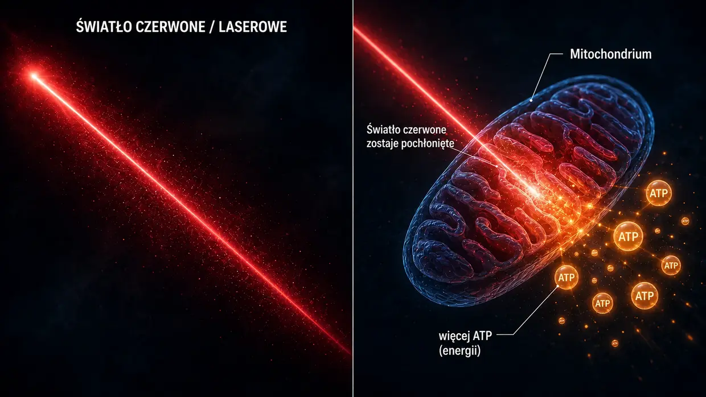
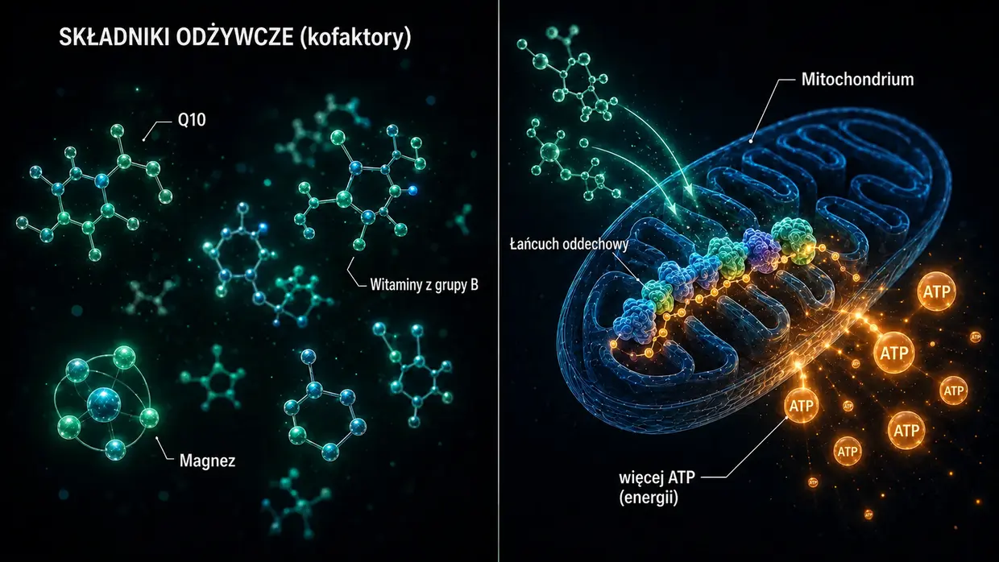

Źródła naukowe i dowody kliniczne
Ta strona pokazuje fundament wszystkiego, o czym piszę w tym serwisie. Mój model jest moją osobistą interpretacją tego, co działo się na poziomie komórkowym, gdy miałem szumy uszne. Jednak poszczególne elementy — białka sieciujące między filamentami aktynowymi we włoskach czuciowych, aktywacja kalpain pod wpływem hałasu, metabolizm ATP, naprawa z udziałem XIRP2, Central Gain w mózgu, lokalna oś HPA w ślimaku oraz mitochondrialne działanie Q10, witamin z grupy B i niacyny — nie są żadnym wymysłem. Są udokumentowane w badaniach i sprawdzane w praktyce lekarskiej.
Wstęp: dwa rodzaje dowodów
Na początek uczciwa uwaga: umieszczam na tej stronie dwa rodzaje dowodów — i świadomie stawiam je obok siebie, nie uznając z góry jednego za ważniejszy od drugiego.
Po pierwsze: badania mechanistyczne nad białkami sieciującymi, kalpainami i innymi elementami, prowadzone w ramach badań podstawowych. Są to recenzowane naukowo — czyli oceniane przez niezależnych specjalistów — prace publikowane w czasopismach takich jak Nature Communications, Journal of Neuroscience, PNAS czy eLife. Pokazują, jak działa maszyneria komórkowa, a więc procesy zachodzące w pojedynczych komórkach: jak białka sieciujące stabilizują stereocylia, jak kalpainy uaktywniają się pod wpływem hałasu, jak XIRP2 prowizorycznie stabilizuje pęknięcia i jak zwiększenie ATP przywraca słuch po uszkodzeniu hałasem w takim stopniu, na jaki pozwalają indywidualne możliwości organizmu. Badania te są niezbędne, aby zrozumieć mój model szumów usznych wywołanych hałasem.
Po drugie: dowody pochodzące z praktyki klinicznej doświadczonych lekarzy, czyli to, co przez lata widzieli bezpośrednio u prawdziwych pacjentów i dokumentowali. Chodzi o głosy takich osób jak dr Lutz Wilden, który od 1987 roku — a więc od ponad 35 lat — nieprzerwanie leczy pacjentów z chorobami ucha wewnętrznego terapią laserem niskiej mocy i standardowo dokumentuje audiogramy przed leczeniem oraz po nim. Do tego dochodzą tysiące użytkowników domowych laserów na całym świecie, którzy łączą samodzielną terapię z kontrolnymi badaniami audiometrycznymi. W Szwajcarii firma Tinnitool od lat 90. również objęła opieką tysiące pacjentów, opierając się na tej samej logice działania — LLLT prowadzi do zwiększenia ATP w komórkach słuchowych. Do tego dochodzą grupa Hahna z Pragi (540 pacjentów w dwóch opublikowanych badaniach), Uniwersytet w Kioto w Japonii oraz brazylijski zespół badawczy — w każdym z tych przypadków odnotowano mierzalną poprawę, gdy laser był wystarczająco mocny. Badania z laserem o zbyt małej mocy, które w uczciwie przeprowadzonym teście nie wykazały efektu, rzetelnie omawiam niżej. Dochodzi do tego dr Dietrich Klinghardt ze swoją wieloletnią pracą nad obciążeniem metalami ciężkimi i toksynami. Znaczna część tego doświadczenia z praktyki nie została opublikowana w najważniejszych czasopismach naukowych, takich jak Nature Communications — i istnieją ku temu powody, o których mówi sam Wilden. Nie zmienia to jednak faktu, że przez ostatnie dziesięciolecia naprawdę znacząca liczba pacjentów wyzdrowiała tą drogą, co potwierdzają audiogramy.
Dlaczego liczą się oba źródła
Uważam, że uczciwiej jest postawić obok siebie oba rodzaje dowodów, niż udawać, że jedyną prawdą godną poważnego traktowania są badania recenzowane naukowo. Moim zdaniem wynika to z tego, że duża część środków na badania nad szumami usznymi jest kierowana raczej na rozwój aparatów słuchowych i objętych ochroną patentową ścieżek rozwoju leków. W przypadku niepodlegających opatentowaniu kombinacji składników odżywczych, określonych protokołów laserowych o wysokiej dawce czy protokołów detoksykacji po prostu nie istnieje instytucjonalne zainteresowanie badawcze.
Nie jestem lekarzem, naukowcem ani badaczem. Jestem osobą, która dwukrotnie wyzdrowiała z szumów usznych, a dostępna dokumentacja audiometryczna dotyczy wyłącznie pierwszego epizodu. Obsesyjnie dużo czytałem, szukałem informacji i próbowałem na własną rękę. Kiedy cytuję tutaj badanie albo lekarza, nie znaczy to, że jest to dowód na to, iż moja droga zadziała u ciebie. Znaczy to, że poszczególne elementy, na których się opieram, są poważnie traktowane w badaniach i praktyce. W przypadku ostrych dolegliwości — zwłaszcza nagłych szumów usznych albo utraty słuchu — najpierw skonsultuj się z laryngologiem, aby wykluczyć przyczyny organiczne.
Jedno na początek, zanim przejdziemy do szczegółów: najważniejszym odkryciem z całych moich poszukiwań jest pewien wzorzec, na który trafiałem raz za razem — wszędzie tam, gdzie wyraźnie zwiększano produkcję energii w komórkach rzęsatych, szumy uszne się zmniejszały. Trzy zupełnie różne drogi, jeden wspólny mianownik. Szczegółowo pokazuję to niżej: jeśli chcesz od razu tam przejść, kliknij tutaj. Wszystkich pozostałych najpierw wprowadzę w podstawy — pokażę, jak zbudowane jest ucho i co ulega w nim uszkodzeniu.
Część 1: badania mechanistyczne z zakresu badań podstawowych
Crosslinkery między filamentami aktynowymi w stereocyliach
Na stronie głównej porównuję włoski czuciowe do wiązki surowego spaghetti, którą spajają krótkie mostki białkowe — crosslinkery, czyli białka sieciujące. Nie są one moim wymysłem. Są to trzy konkretne rodziny białek — plastyna/fimbryna (PLS1), espina (ESPN) oraz fascyna-2 (FSCN2) — a ich obecność i funkcje w stereocyliach są udokumentowane na poziomie molekularnym od ponad 20 lat.
Krey JF, Krystofiak ES, Dumont RA, et al. (2016). Plastin 1 widens stereocilia by transforming actin filament packing from hexagonal to liquid. Journal of Cell Biology, 215(4), 467–482. PMID: 27811163. Link
To kluczowe badanie ilościowe crosslinkerów. Za pomocą spektrometrii mas Krey i wsp. wykazali, że pojedyncze stereocylium zawiera między filamentami aktynowymi około 30 500 cząsteczek plastyny-1, 16 100 cząsteczek fascyny-2 i 14 800 cząsteczek espiny. Po samej aktynie plastyna-1 jest drugim pod względem ilości białkiem w całym stereocylium. Myszy pozbawione funkcjonalnej plastyny-1 albo fascyny-2 miały osłabiony słuch, a najsilniejsze zaburzenia występowały u podwójnych mutantów. Stereocylia bez plastyny-1 są krótsze i cieńsze niż stereocylia typu dzikiego. To bezpośredni eksperymentalny dowód, że crosslinkery rzeczywiście odpowiadają za integralność strukturalną włosków czuciowych.
Perrin BJ, Strandjord DM, Narayanan P, et al. (2013). β-Actin and Fascin-2 Cooperate to Maintain Stereocilia Length. Journal of Neuroscience, 33(19), 8114–8121. PMID: 23658152. Link
Bezpośredni dowód na to, co się dzieje, gdy fascyna-2 przestaje działać: myszy z mutacją fascyny-2 wykazują postępujący ubytek słuchu w zakresie wysokich częstotliwości oraz swoiste skrócenie drugiego i trzeciego rzędu stereocyliów. Zmutowany wariant fascyny-2 nadal wiąże się z aktyną, ale nie potrafi już skutecznie sieciować filamentów — i właśnie przez to włoski tracą swoją długość. To taki sam strukturalny efekt końcowy, jaki opisuję na stronie głównej w odniesieniu do utraty crosslinkerów pod wpływem hałasu; tutaj wywołuje go mutacja genetyczna, a nie rozszczepienie przez kalpainy.
Sekerková G, Zheng L, Loomis PA, et al. (2004). Espins are multifunctional actin cytoskeletal regulatory proteins in the microvilli of chemosensory and mechanosensory cells. Journal of Neuroscience, 24(23), 5445–5456. PMID: 15190118. Link
To strukturalna charakterystyka espiny jako crosslinkera aktyny w stereocyliach. Espinę zidentyfikowano jako białko wiążące równoległe filamenty aktynowe w pęczki; co ważne, wapń nie hamuje jej działania, choć podczas prawidłowego funkcjonowania wnętrze stereocyliów jest narażone na wahania jego stężenia. Myszy z uszkodzoną espiną są głuche i mają zaburzenia równowagi. Mutacje espiny również u ludzi powodują dziedziczną głuchotę.
Co to wszystko razem oznacza: skoro mutacja genetyczna albo knockout któregokolwiek z trzech crosslinkerów — plastyny/fimbryny, espiny lub fascyny-2 — prowadzi już do utraty słuchu i strukturalnych wad stereocyliów, biologicznie wiarygodne jest, że nabyte, wywołane hałasem rozszczepienie tych lub pokrewnych crosslinkerów przez kalpainy — tak jak opisuję to na stronie głównej — może przynieść taki sam strukturalny efekt końcowy.
Aktywacja kalpain pod wpływem hałasu
Pod wpływem hałasu do komórki rzęsatej masowo napływa wapń. To przeciążenie wapniem aktywuje kalpainy — zależne od wapnia enzymy proteolityczne, które następnie rozszczepiają białka sieciujące aktynę. Istnienie tego mechanizmu potwierdziły dwa niezależne laboratoria badawcze, stosując różne inhibitory kalpain.
Lai R, Fang Q, Wu F, Pan S, Haque K, Sha SH. (2023). Prevention of noise-induced hearing loss by calpain inhibitor MDL-28170 is associated with upregulation of PI3K/Akt survival signaling pathway. Frontiers in Cellular Neuroscience, 17, 1199656. Link
Bezpośredni dowód na mechanizm działania kalpain: hałas aktywuje w komórkach rzęsatych µ-kalpainę i m-kalpainę, a inhibitor kalpain MDL-28170 zapobiega zarówno utracie słuchu, jak i utracie synaps. Badanie pokazuje ponadto, że kalpaina rozszczepia białko strukturalne α-fodrynę — białko sieciujące spektrynę z aktyną w korze komórkowej. Nie jest to dokładnie ten sam rodzaj crosslinkera co swoiste dla stereocyliów plastyna, espina i fascyna-2, ale dowodzi, że hałas aktywuje kalpainy i że atakują one białka sieciujące aktynę. To, że mogłyby przy tym ucierpieć także crosslinkery stereocyliów, jest wiarygodną hipotezą wynikającą ze zbieżności tych przesłanek.
Yamaguchi T, Yoneyama M, Ogita K. (2017). Calpain inhibitor alleviates permanent hearing loss induced by intense noise by preventing disruption of gap junction-mediated intercellular communication in the cochlear spiral ligament. European Journal of Pharmacology, 803, 187–194. PMID: 28366808. Link
Drugie laboratorium potwierdza mechanizm uszkodzeń zależnych od kalpain za pomocą innego inhibitora — PD150606. Badanie rozszerza obraz o drugie miejsce uszkodzenia: pod wpływem hałasu kalpaina atakuje również komunikację przez połączenia szczelinowe w więzadle spiralnym, czyli w bocznej ścianie ślimaka. Uszkodzenia wywołane hałasem nigdy nie ograniczają się do jednego miejsca.
Lektura uzupełniająca: Fettiplace R, Hackney CM. (2006). The sensory and motor roles of auditory hair cells. Nature Reviews Neuroscience, 7(1), 19–29. — Klasyczny przegląd budowy i funkcji komórek rzęsatych.
Naprawa aktyny z udziałem XIRP2 (faza 1)
Wagner EL, Im JS, Sala S, et al. (2023). Repair of noise-induced damage to stereocilia F-actin cores is facilitated by XIRP2 and its novel mechanosensor domain. eLife, 12, e72681. PMID: 37294664. Link
To najważniejsza praca dotycząca mechanizmu samonaprawy komórek rzęsatych. Pod wpływem hałasu w aktynowym rusztowaniu włosków czuciowych powstają mierzalne „luki”. U myszy w ciągu tygodnia wypełnia je świeżo zsyntetyzowana γ-aktyna. Białko naprawcze XIRP2 mechanicznie rozpoznaje uszkodzenia i inicjuje naprawę. Bez XIRP2 uszkodzenia pozostają trwałe.
Na stronie głównej opisuję XIRP2 jako „pancerną taśmę naprawczą”, która prowizorycznie stabilizuje miejsca pęknięć (faza 1). Właściwa naprawa fazy 2 — zbudowanie świeżej aktyny i wstawienie nowych crosslinkerów — zajmuje w tym badaniu około tygodnia u doskonale zaopatrzonych myszy laboratoryjnych. Kluczowe pytanie brzmi, co oznacza to dla zestresowanego dorosłego człowieka, który tkwi jednocześnie w energetycznym kołowrotku — często brakuje mu bowiem właśnie tej energii, której wymaga naprawa.
Badanie sfinansowane przez NIH (R01DC021176).
Zwiększenie ATP jako dźwignia naprawy: AC102
To sedno mojego protokołu dotyczącego hałasu na ścieżce farmakologicznej: kiedy komórka ma za mało energii, według mnie naprawia się zbyt wolno i w niewystarczającym stopniu, aby nadążyć za codziennymi obciążeniami. Poniższe badania pokazują, że również farmakologia traktuje tę koncepcję poważnie — berlińska firma farmaceutyczna opracowuje obecnie lek ukierunkowany dokładnie na ten mechanizm.
Rommelspacher H, Bera S, Brommer B, Ward R et al. (2024). A single dose of AC102 restores hearing in a guinea pig model of noise-induced hearing loss to almost prenoise levels. PNAS, 121(15), e2314763121. PMID: 38557194. Link
To główne badanie nad AC102. Testy in vitro wykazały, że AC102 wyraźnie zwiększa komórkową produkcję ATP, a jednocześnie ogranicza reaktywne formy tlenu (ROS). W modelu zwierzęcym pojedyncza dawka istotnie poprawiła słuch po urazie akustycznym — w tytule badania opisano to jako powrót „niemal do poziomu sprzed hałasu” (konkretnie: poprawa o 13–31 dB przy średnim ubytku słuchu wywołanym hałasem wynoszącym 80 dB — poprawa istotna, ale nie pełne przywrócenie słuchu). Zwiększenie produkcji ATP, ograniczenie ROS i ochrona synaps to dokładnie mechanizmy opisane w moim modelu, tyle że tutaj wymuszone farmakologicznie.
Tziridis K, Rasheed J, Kwiatkowska M, et al. (2025). A Single Dose of AC102 Reverts Tinnitus by Restoring Ribbon Synapses in Noise-Exposed Mongolian Gerbils. International Journal of Molecular Sciences, 26(11), 5124. Link
W tym badaniu sprawdzono dodatkowo, czy AC102 odwraca również wzorce zachowania swoiste dla szumów usznych. Wynik: w dużej mierze tak — a synapsy wstążkowe między komórkami rzęsatymi a nerwem słuchowym istotnie się zregenerowały. To bezpośredni dowód, że nieustanny glutaminianowy ostrzał nerwu słuchowego ustaje, gdy powraca energia komórkowa.
Nieratschker M, Yildiz E, Gerlitz M, et al. (2024). A preoperative dose of the pyridoindole AC102 improves the recovery of residual hearing in a gerbil animal model of cochlear implantation. Cell Death & Disease, 15, 531. Link
Rozszerza dane dotyczące AC102 na drugą ścieżkę uszkodzeń: substancja chroni słuch resztkowy także w przypadku urazu związanego z implantacją ślimakową. Pokazuje to, że mechanizm działa niezależnie od czynnika wywołującego uszkodzenie — czy uraz mechaniczny jest skutkiem hałasu, czy operacji, komórkowa kaskada alarmowa jest taka sama, a dźwignia ATP działa w obu przypadkach.
AudioCure Pharma GmbH. Clinical Study NCT05776459. AC102 jest obecnie przedmiotem ogólnoeuropejskiego badania fazy 2 u pacjentów z nagłą odbiorczą utratą słuchu (SSNHL) — włączono 210 pacjentów, rekrutacja została zakończona, a wyniki nie są jeszcze dostępne. Link
Stres, oś HPA i ślimak jako narząd neuroendokrynny
Szumy uszne związane ze stresem są naukowo trudniejsze do uchwycenia niż te wywołane hałasem. Dla mojego modelu kluczowe jest to, że sam ogólny przewlekły stres nie wytwarza za pośrednictwem osi HPA tonu szumów usznych. Może jednak zwiększać podatność ucha wewnętrznego na uszkodzenia. Aktywacja układu współczulnego może zmniejszać przepływ krwi; gdy naczynia krwionośne prążka naczyniowego (stria vascularis) się zwężają, ucho wewnętrzne może stać się bardziej podatne na uszkodzenia spowodowane hałasem lub innymi czynnikami. Poniższe prace na temat lokalnego układu sygnałowego HPA w ślimaku opisują procesy fizjologiczne zachodzące w uchu wewnętrznym. Nie wywodzę z nich odrębnego szlaku HPA, który wytwarza szumy uszne.
Graham CE, Vetter DE. (2011). The mouse cochlea expresses a local hypothalamic-pituitary-adrenal equivalent signaling system and requires corticotropin-releasing factor receptor 1 to establish normal hair cell innervation and cochlear sensitivity. Journal of Neuroscience, 31(4), 1267–1278. PMID: 21273411. Link
To kluczowe badanie. Ślimak myszy wykazuje miejscową ekspresję całego układu sygnałowego osi HPA: czynnika uwalniającego kortykotropinę (CRF), receptora CRF1, ACTH, receptora mineralokortykoidowego oraz receptora glukokortykoidowego. Myszy z knockoutem receptora CRF1 mają zaburzone unerwienie komórek rzęsatych i zmniejszoną wrażliwość ślimaka. Badanie opisuje więc lokalny układ regulacyjny ślimaka, a nie dowód na odrębny szlak HPA prowadzący do szumów usznych.
Graham CE, Basappa J, Vetter DE. (2010). A corticotropin-releasing factor system expressed in the cochlea modulates hearing sensitivity and protects against noise-induced hearing loss. Neurobiology of Disease, 38(2), 246–258. PMID: 20109547. Link
Badanie poprzedzające pracę Graham/Vetter z 2011 roku: pokazuje, że lokalny układ CRF w ślimaku reguluje wrażliwość słuchu i może chronić przed ubytkiem słuchu wywołanym hałasem.
Furuta H, Mori N, Sato C, et al. (1994). Mineralocorticoid type I receptor in the rat cochlea: mRNA identification by PCR and in situ hybridization. Hearing Research, 78(2), 175–180. PMID: 7982810. Link
Historyczny pierwszy opis: receptory mineralokortykoidowe ulegają ekspresji w prążku naczyniowym (stria vascularis) ślimaka — dokładnie w tej „baterii” ucha wewnętrznego, która utrzymuje rezerwuar potasu w endolimfie. Kortyzol może tam za pośrednictwem receptorów mineralokortykoidowych regulować wydzielanie potasu.
Mazurek B, Haupt H, Olze H, Szczepek AJ. (2012). Stress and tinnitus – from bedside to bench and back. Frontiers in Systems Neuroscience, 6, 47. Link
Systematyczna synteza z berlińskiej kliniki Charité: Mazurek i Szczepek łączą pierwotne ustalenia Graham/Vetter oraz Furuty w trzy sprawdzalne hipotezy wyjaśniające, w jaki sposób stres może wywoływać szumy uszne — przez lokalny układ HPA ślimaka, przez modulowanie receptorów mineralokortykoidowych w prążku naczyniowym przez kortyzol, co wpływa na wydzielanie potasu, oraz przez plastyczność drogi słuchowej zależną od glutaminianu. Są to hipotezy autorów; nie przyjmuję ich jako własnego modelu powstawania tonu.
Hébert S, Lupien SJ. (2007). The sound of stress: Blunted cortisol reactivity to psychosocial stress in tinnitus sufferers. Neuroscience Letters, 411(2), 138–142. PMID: 17084027. Link
U pacjentów z szumami usznymi w reakcji na ostry stres psychospołeczny występuje opóźniona i spłaszczona odpowiedź kortyzolowa. Badanie opisuje więc zmienioną reakcję na stres u badanych osób; nie dowodzi, że wyczerpanie osi HPA powoduje szumy uszne.
Manohar S, Chen GD, Li L, Liu X, Salvi R. (2023). Chronic stress induced loudness hyperacusis, sound avoidance and auditory cortex hyperactivity. Hearing Research, 431, 108726. PMID: 36905854. Link
Bezpośredni dowód eksperymentalny: u szczurów poddanych przewlekłemu działaniu kortyzolu rozwijają się zachowania odpowiadające hiperakuzji oraz wzorce przypominające szumy uszne w korze słuchowej — bez jakiejkolwiek ostrej ekspozycji na hałas. Nie dowodzi to odrębnego szlaku prowadzącego od stresu do szumów usznych.
Schaette R, McAlpine D. (2011). Tinnitus with a Normal Audiogram: Physiological Evidence for Hidden Hearing Loss and Computational Model. Journal of Neuroscience, 31(38), 13452–13457. Link
Schaette i McAlpine opisują model Central Gain, czyli centralnego wzmocnienia: gdy dopływ bodźców słuchowych jest ograniczony, ośrodkowy układ słuchowy zwiększa swoją czułość. W moim modelu Central Gain jedynie wzmacnia już istniejący, aktywny nieprawidłowy sygnał; samo ograniczenie dopływu bodźców nie wytwarza tonu szumów usznych.
Auerbach BD, Rodrigues PV, Salvi RJ. (2014). Central Gain Control in Tinnitus and Hyperacusis. Frontiers in Neurology, 5, 206.
Eggermont JJ, Roberts LE. (2004). The neuroscience of tinnitus. Trends in Neurosciences, 27(11), 676–682.
Auerbach, Rodrigues i Salvi omawiają koncepcję Central Gain w związku z szumami usznymi i hiperakuzją; jest to stanowisko tej pracy przeglądowej, a nie mój model powstawania tonu. Szumy uszne i hiperakuzja mogą występować razem, ale nie uznaję ich za skutki centralnego wzmocnienia. Klasyczna praca Eggermonta i Robertsa: szumom usznym towarzyszą zmieniona spontaniczna aktywność neuronalna oraz zmieniona organizacja tonotopowa w korze słuchowej.
Trauma, zapisany stres i neuronalne współpobudzenie sąsiednich szlaków
Odrębny od tego centralny szlak dotyczy pytania: jak zapisana trauma może jeszcze po latach wywoływać objawy fizyczne — i jak lokalne, samopodtrzymujące się ognisko stresu w mózgu może rzeczywiście współaktywować sąsiednie ośrodki nerwowe?
To właśnie mechanizm, który Michael Prgomet przedstawia dydaktycznie jako „elektrostatyczne pole napięcia” (zobacz sekcję 14). Na swojej podstronie o szumach usznych związanych ze stresem objaśniłem ten model prostym językiem. Ta sekcja pokazuje, że poszczególne neurobiologiczne elementy leżące u jego podstaw są dobrze ugruntowane naukowo. Oryginalność tej syntezy polega na połączeniu owych elementów w spójny model wyjaśniający — same pojedyncze mechanizmy zostały opisane w recenzowanych badaniach i wielokrotnie zreplikowane.
5.1.1 Trauma pozostawia mierzalne ślady neurobiologiczne
Udowodniono, że silne albo przewlekłe doświadczenie stresu zmienia strukturę i funkcjonowanie określonych obszarów mózgu. Trauma nie pozostaje „wyłącznie w psychice”, lecz zostaje fizycznie zapisana w połączeniach układu nerwowego.
McEwen BS, Nasca C, Gray JD. (2016). Stress Effects on Neuronal Structure: Hippocampus, Amygdala, and Prefrontal Cortex. Neuropsychopharmacology, 41(1), 3–23. PMID: 26076834. Link
Opisuje mierzalne zmiany strukturalne i funkcjonalne wywoływane przez przewlekły stres w hipokampie, ciele migdałowatym i korze przedczołowej. Właśnie te obszary mają kluczowe znaczenie dla pamięci, lęku, oceny sytuacji i regulacji stresu — są to więc dokładnie te struktury, które odgrywają rolę w trwale aktywnym wzorcu stresowym.
Sherin JE, Nemeroff CB. (2011). Post-traumatic stress disorder: the neurobiological impact of psychological trauma. Dialogues in Clinical Neuroscience, 13(3), 263–278. PMID: 22034143. Link
Przegląd długotrwałych neurobiologicznych skutków traumy: nadreaktywność ciała migdałowatego, osłabienie kontroli przedczołowej, zmiany w hipokampie oraz utrzymujące się zmiany w układach hormonów stresu. Trauma nie „kończy się więc wraz z końcem sytuacji” — zostaje zapisana w połączeniach układu nerwowego.
Yehuda R, LeDoux J. (2007). Response Variation following Trauma: A Translational Neuroscience Approach to Understanding PTSD. Neuron, 56(1), 19–32. PMID: 17920012. Link
Pokazuje, że trauma może długotrwale zmieniać oś HPA, układ noradrenergiczny, reaktywność autonomiczną oraz funkcjonowanie hipokampa. To mechanistyczna podstawa zapisanych wzorców stresowych, które mogą nadal działać w tle.
5.1.2 Obciążenie allostatyczne — dlaczego problemem staje się dopiero przewlekły stres
Ostry stres sytuacyjny jest zdrową reakcją i organizm dobrze sobie z nim radzi. Zjawiska, które opisuję na podstronie o szumach usznych związanych ze stresem, nie pojawiają się wskutek zwykłej kłótni ani jednorazowego silnego obciążenia — powstają dopiero wtedy, gdy układ nie potrafi już wrócić do równowagi, a obciążenie kumuluje się z czasem.
McEwen BS. (1998). Stress, Adaptation, and Disease: Allostasis and Allostatic Load. Annals of the New York Academy of Sciences, 840(1), 33–44. PMID: 9629234. Link
Praca ta stworzyła podstawy koncepcji obciążenia allostatycznego. Ostry stres jest użyteczny; przewlekłe, kumulujące się obciążenie uszkadza układ. Właśnie ten punkt precyzyjnie odróżnia mój model od mylącego stwierdzenia, że „stres ogólnie wywołuje szumy uszne”. Nie chodzi o codzienny stres — chodzi o układy przewlekle obciążone już wcześniej.
McEwen BS, Stellar E. (1993). Stress and the individual: mechanisms leading to disease. Archives of Internal Medicine, 153(18), 2093–2101. PMID: 8379800.
Opisuje mechanizmy, za pomocą których przewlekły stres prowadzi do choroby — przez kumulujące się obciążenie, a nie pojedyncze epizody. Jasno wyjaśnia, dlaczego zjawiska te nie występują u każdej osoby doświadczającej codziennego stresu, lecz tylko u ludzi, których układ jest już przewlekle zdestabilizowany.
5.1.3 Sensytyzacja ośrodkowa — wzmacniacz w przeciążonym wcześniej układzie nerwowym
Przy przewlekłym obciążeniu ośrodkowy układ nerwowy staje się bardziej wrażliwy na bodźce. Hamowanie słabnie, pobudliwość rośnie, a progi pobudzenia się obniżają. Bodźce, które wcześniej pozostawały podprogowe, nagle wystarczają do wywołania objawów. To naukowy opis tego, co na podstronie o szumach usznych związanych ze stresem nazywam „układem wcześniej przeciążonym i nadmiernie otwartym na bodźce”.
Woolf CJ. (2011). Central sensitization: Implications for the diagnosis and treatment of pain. Pain, 152(3 Suppl), S2–S15. PMID: 20961685. Link
Definiuje sensytyzację ośrodkową jako zwiększoną reaktywność neuronów ośrodkowych na normalne albo podprogowe bodźce wejściowe. Jest to ugruntowany filar współczesnych badań nad bólem. Mój model przenosi tę zasadę na szumy uszne związane ze stresem.
Latremoliere A, Woolf CJ. (2009). Central sensitization: a generator of pain hypersensitivity by central neural plasticity. The Journal of Pain, 10(9), 895–926. PMID: 19712899. Link
Szczegółowy opis komórkowych i molekularnych mechanizmów sensytyzacji ośrodkowej. Pokazuje, jak układ obciążony już wcześniej stwarza warunki, dzięki którym niewielkie pola stresu mogą w ogóle zacząć wywoływać objawy.
Yunus MB. (2008). Central sensitivity syndromes: a new paradigm and group nosology for fibromyalgia and overlapping conditions. Seminars in Arthritis and Rheumatism, 37(6), 339–352. PMID: 18191990. Link
Odnosi koncepcję sensytyzacji ośrodkowej do fibromialgii, przewlekłego zmęczenia, zespołu jelita drażliwego, przewlekłych szumów usznych oraz pokrewnych zespołów. To dokładnie ten pomost, który naukowo zakotwicza mój model szumów usznych związanych ze stresem.
5.1.4 Sprzężenie efaptyczne — bezpośrednie elektryczne współpobudzenie sąsiednich komórek nerwowych
To twardy neurofizjologiczny rdzeń metafory generatora Van de Graaffa. Kiedy obszar neuronalny wyładowuje się silnie i synchronicznie, wytwarza lokalne pola elektryczne, które rzeczywiście mogą oddziaływać na sąsiednie komórki nerwowe — bez klasycznej synapsy. Przy dostatecznej aktywności pola te mogą sprawić, że sąsiednie komórki przekroczą próg pobudzenia, oraz zsynchronizować ich wyładowania. To dokładnie mechanizm kryjący się za obrazem: „nerw A się wyładowuje, a nerw B zostaje pociągnięty za nim”.
Anastassiou CA, Perin R, Markram H, Koch C. (2011). Ephaptic coupling of cortical neurons. Nature Neuroscience, 14(2), 217–223. PMID: 21240273. Link
Bezpośredni eksperymentalny dowód sprzężenia efaptycznego w korze mózgowej. Badanie wykazało, że zewnątrzkomórkowe pola elektryczne mogą zmieniać potencjał błonowy sąsiednich neuronów i synchronizować moment powstawania potencjałów czynnościowych. To najważniejszy dowód na to, że silnie aktywna grupa komórek nerwowych może rzeczywiście elektrycznie współaktywować komórki sąsiednie.
Buzsáki G, Anastassiou CA, Koch C. (2012). The origin of extracellular fields and currents — EEG, ECoG, LFP and spikes. Nature Reviews Neuroscience, 13(6), 407–420. PMID: 22595786. Link
Podstawowy przegląd powstawania pól elektrycznych w mózgu. Opisuje, jak synchronicznie aktywne grupy neuronów mogą funkcjonalnie oddziaływać na inne neurony za pośrednictwem gradientów napięcia. Wyjaśnia przy tym jasno: nie są to żadne „wielkie wyładowania” jak przy kuli wysokonapięciowej, lecz niewielkie, ograniczone lokalnie oddziaływania pola — jednak są realne i biologicznie czynne.
Fröhlich F, McCormick DA. (2010). Endogenous electric fields may guide neocortical network activity. Neuron, 67(1), 129–143. PMID: 20624597. Link
Pokazuje, że endogenne pola elektryczne nie tylko towarzyszą aktywności sieci neuronalnych, lecz także mają przyczynowy wpływ na jej przebieg. To mocny gwóźdź do trumny tezy, że oddziaływania pól elektrycznych w mózgu są wyłącznie zjawiskiem ubocznym.
5.1.5 Kindling — powtarzane pobudzenie utrwala wzorzec
Gdy obszar neuronalny jest wielokrotnie pobudzany podprogowo, z czasem coraz łatwiej go aktywować — i stopniowo włącza on także obszary sąsiednie. Zjawisko to zostało ugruntowane w badaniach nad padaczką, a później przeniesione również na przewlekły ból, traumę i stany nadmiernego pobudzenia.
Goddard GV, McIntyre DC, Leech CK. (1969). A permanent change in brain function resulting from daily electrical stimulation. Experimental Neurology, 25(3), 295–330. PMID: 4981856.
Klasyczna praca źródłowa dotycząca zjawiska kindlingu. Powtarzane pobudzenie podprogowe powoduje trwałą zmianę funkcjonowania mózgu — z czasem dany obszar można aktywować coraz łatwiej.
Post RM. (2007). Kindling and sensitization as models for affective episode recurrence, cyclicity, and tolerance phenomena. Neuroscience & Biobehavioral Reviews, 31(6), 858–873. PMID: 17555817. Link
Przeniesienie koncepcji kindlingu na zaburzenia afektywne, PTSD i przewlekłe stany stresowe. Naukowo wyjaśnia, dlaczego stale reaktywowane wzorce stresowe mogą z czasem nie wygasać, lecz stawać się silniejsze i obejmować coraz większy obszar — dokładnie to zjawisko opisuję na podstronie o szumach usznych związanych ze stresem.
5.1.6 Aktywacja gleju i neurozapalenie — wzmacniacz biochemiczny
Przewlekłe pobudzenie aktywuje mikroglej i astrocyty. Uwalniają one substancje sygnałowe — TNF-α, IL-1β i IL-6 — które w mierzalny sposób zwiększają pobudliwość okolicznych neuronów, a tym samym wprowadzają cały obszar w stan ułatwionej aktywacji. To biochemiczny wzmacniacz między „układem obciążonym już wcześniej” a sytuacją, w której „pole stresu może się przebić”.
Ji RR, Nackley A, Huh Y, Terrando N, Maixner W. (2018). Neuroinflammation and Central Sensitization in Chronic and Widespread Pain. Anesthesiology, 129(2), 343–366. PMID: 29462012. Link
Bezpośredni dowód na to, w jaki sposób aktywacja gleju napędza sensytyzację ośrodkową. Mikroglej i astrocyty nie są tylko biernymi komórkami podporowymi — aktywnie regulują pobudliwość neuronalną, a przy przewlekłym obciążeniu mogą wprowadzić tkankę nerwową w trwale bardziej reaktywny stan.
Michopoulos V, Powers A, Gillespie CF, Ressler KJ, Jovanovic T. (2017). Inflammation in Fear- and Anxiety-Based Disorders: PTSD, GAD, and Beyond. Neuropsychopharmacology, 42(1), 254–270. PMID: 27510423. Link
PTSD i przewlekły lęk wiążą się z mierzalnymi zmianami zapalnymi w układzie nerwowym. To zamyka krąg: trauma → stres → neurozapalenie → bardziej reaktywna tkanka → łatwiejsza aktywacja zapisanych wzorców stresowych.
5.1.7 Dysrytmia wzgórzowo-korowa — bezpośredni związek z szumami usznymi
W przewlekłych szumach usznych badania MEG i EEG wykazują patologiczne wzorce oscylacji między wzgórzem a korą słuchową. Lokalnie zmieniony wzorzec aktywności wytwarza utrzymujące się sprzężenia theta–gamma, które mogą przyczyniać się do trwałego postrzegania dźwięku. To bezpośredni neurofizjologiczny pomost między nadaktywnym polem stresu a trwałym odczuwaniem szumów usznych.
Llinás RR, Ribary U, Jeanmonod D, Kronberg E, Mitra PP. (1999). Thalamocortical dysrhythmia: A neurological and neuropsychiatric syndrome characterized by magnetoencephalography. PNAS, 96(26), 15222–15227. PMID: 10611366. Link
Praca tworzy podstawy koncepcji dysrytmii wzgórzowo-korowej jako mechanizmu przewlekłych objawów neurologicznych, wykrywanego za pomocą niezwykle czułej technologii MEG. To właśnie te urządzenia MEG pozwalają uwidocznić również bardzo małe, ograniczone lokalnie pola napięcia w mózgu.
De Ridder D, Vanneste S, Langguth B, Llinás R. (2015). Thalamocortical Dysrhythmia: A Theoretical Update in Tinnitus. Frontiers in Neurology, 6, 124. PMID: 26106362. Link
Bezpośrednie odniesienie tej koncepcji do przewlekłych szumów usznych na podstawie danych MEG. Pokazuje, że u pacjentów z przewlekłymi szumami usznymi można zmierzyć patologiczne sprzężenia theta–gamma w korze słuchowej.
Vanneste S, De Ridder D. (2012). The auditory and non-auditory brain areas involved in tinnitus. An emergent property of multiple parallel overlapping subnetworks. Frontiers in Systems Neuroscience, 6, 31. PMID: 22586375. Link
Pokazuje, że przewlekłe szumy uszne wiążą się ze zmienionym współdziałaniem wielu sieci mózgowych — słuchowych i pozasłuchowych. Sieci stresu i dystresu są przy tym funkcjonalnie sprzężone z sieciami słuchowymi. To połączenie, przez które nadaktywny wzorzec stresowy może oddziaływać na układ słuchowy.
5.1.8 Rekonsolidacja pamięci — dlaczego dawne wzorce stresowe mogą w ogóle zaniknąć
Dawne wspomnienia emocjonalne nie są na zawsze trwale zapisane w połączeniach neuronalnych. Gdy zostają reaktywowane, na krótko przechodzą w stan niestabilny i mogą zostać zapisane ponownie — w zmienionej postaci albo z uwolnionym ładunkiem emocjonalnym. To naukowa podstawa wyjaśniająca, dlaczego metody takie jak metoda Michaela Prgometa, EMDR czy inne reaktywujące podejścia terapeutyczne mogą w ogóle działać.
Nader K, Schafe GE, Le Doux JE. (2000). Fear memories require protein synthesis in the amygdala for reconsolidation after retrieval. Nature, 406(6797), 722–726. PMID: 10963596. Link
Klasyczna praca źródłowa dotycząca rekonsolidacji pamięci. Pokazuje w modelu zwierzęcym, że zapisane już wspomnienie lękowe po ponownym przywołaniu może znów przejść w stan niestabilny i musi zostać ustabilizowane na nowo — a w tym procesie można je celowo zmienić.
Lane RD, Ryan L, Nadel L, Greenberg L. (2015). Memory reconsolidation, emotional arousal, and the process of change in psychotherapy: New insights from brain science. Behavioral and Brain Sciences, 38, e1. PMID: 24827452. Link
Przeniesienie tej koncepcji na zastosowanie terapeutyczne. Pokazuje, że celowa reaktywacja, po której następuje nowe przetworzenie, może zmieniać dawne programy emocjonalne. Właśnie ten mechanizm leży u podstaw pracy Prgometa — nawet jeśli jego konkretnej metody nie potwierdzają klasyczne badania RCT.
5.1.9 Synteza: mój model w jednym obrazie
Po zestawieniu poszczególnych elementów wyłania się następujący obraz całości — dokładnie to opisuję prostym językiem na podstronie o szumach usznych związanych ze stresem:
- Trauma albo przewlekły stres zmienia strukturę mózgu i oś HPA → układ ma zmienioną architekturę podstawową (5.1.1)
- Obciążenie allostatyczne narasta, układ przestaje się regenerować → powstaje trwałe przeciążenie wstępne (5.1.2)
- Sensytyzacja ośrodkowa sprawia, że cały układ nerwowy staje się bardziej reaktywny → progi się obniżają (5.1.3)
- Glej i neurozapalenie biochemicznie wzmacniają tę reaktywność (5.1.6)
- Bodziec wyzwalający reaktywuje zapisany wzorzec stresowy → lokalny obszar wyładowuje się silniej
- Kindling sprawił z czasem, że obszar ten reaguje coraz łatwiej (5.1.5)
- Sprzężenie efaptyczne umożliwia elektryczne współaktywowanie sąsiednich szlaków (5.1.4)
- Jeśli ta współaktywacja obejmie sieci przetwarzające dźwięki, może powstać rzeczywiste wrażenie tonu
- Dysrytmia wzgórzowo-korowa stabilizuje ten wzorzec (5.1.7)
- Rekonsolidacja pamięci pokazuje, że takie wzorce mogą zaniknąć, gdy pierwotne źródło zostanie celowo reaktywowane i przetworzone na nowo (5.1.8)
Każdy z tych dziesięciu elementów został opisany w recenzowanych badaniach i wielokrotnie zreplikowany. Oryginalność mojego modelu nie polega na żadnym pojedynczym mechanizmie, lecz na ich połączeniu. W ugruntowanej praktyce laryngologicznej rzadko rozpatruje się tę zależność jako całość, dlatego szumy uszne związane ze stresem często zbywa się stwierdzeniem, że „to tylko psychika”, albo leczy odizolowanymi metodami, takimi jak CBT, bez wyjaśnienia mechaniki leżącej u podstaw problemu.
Czego ta sekcja nie twierdzi
Dla pełnej jasności — czego nie twierdzę:
- Nie twierdzę, że każde przewlekłe szumy uszne są związane ze stresem. Szumy wywołane hałasem, substancjami ototoksycznymi oraz inne postacie mają odmienne główne przyczyny — zobacz odpowiednie sekcje.
- Nie twierdzę, że konkretną metodę Michaela Prgometa potwierdzają klasyczne recenzowane badania naukowe — zobacz sekcję 14. Potwierdzone są poszczególne mechanizmy neurobiologiczne leżące u podstaw jego modelu wyjaśniającego.
- Nie twierdzę, że wszystkie objawy psychosomatyczne przy przewlekłym stresie powstają dokładnie przez ten mechanizm. Istnieje wiele innych dróg.
- Nie składam żadnej obietnicy wyleczenia. Indywidualny przebieg może się znacznie różnić.
Stwierdzam tutaj jedynie, że poszczególne elementy wspierające mój model szumów usznych związanych ze stresem są ugruntowane naukowo.
Szumy uszne wywołane lekami i toksynami
Niektóre leki i substancje szkodliwe bezpośrednio atakują komórki rzęsate. Mechanizm jest inny niż w przypadku hałasu, lecz komórkowy punkt końcowy przeważnie pozostaje ten sam: przeciążenie mitochondriów wapniem, niedobór ATP, apoptoza. To drugi, niezależny przykład zbieżności z moim modelem.
Salvi R, Ding D, Manohar S, et al. (2022). Salicylate Ototoxicity, Tinnitus, and Hyperacusis. Springer Nature, Handbook of Neurotoxicity. Link
Obszerna praca przeglądowa dotycząca ototoksyczności wywołanej aspiryną. Salicylan blokuje prestynę — elektromotoryczny napęd zewnętrznych komórek rzęsatych — i wywołuje ośrodkową reakcję prowadzącą do szumów usznych. Ostre przedawkowanie jest odwracalne, natomiast przewlekłe przyjmowanie wysokich dawek może powodować trwałe zmiany strukturalne.
Sheppard A, Hayes SH, Chen GD, et al. (2014). Review of salicylate-induced hearing loss, neurotoxicity, tinnitus and neuropathophysiology. Acta Otorhinolaryngologica Italica, 34(2), 79–93. Link
Szczegółowe omówienie działania salicylanów.
Esterberg R, Linbo T, Pickett SB, et al. (2016). Mitochondrial calcium uptake underlies ROS generation during aminoglycoside-induced hair cell death. Journal of Clinical Investigation. Link
Antybiotyki aminoglikozydowe — gentamycyna i streptomycyna — przenikają do komórek rzęsatych i wywołują pobieranie wapnia przez mitochondria, co prowadzi do masowej produkcji ROS. Od strony mechanizmu jest to dokładnie ta sama kaskada wapniowo-mitochondrialna, którą opisuję na stronie głównej — tyle że wyzwalacz jest chemiczny, a nie mechaniczny.
Jiang M, Karasawa T, Steyger PS. (2017). Aminoglycoside-Induced Cochleotoxicity: A Review. Frontiers in Cellular Neuroscience, 11, 308. Link
Przegląd toksyczności aminoglikozydów: wnikanie przez kanały mechanotransdukcji, uszkodzenie mitochondriów, apoptoza.
Koenzym Q10 i ochrona mitochondriów
Q10 był stałym elementem mojego protokołu. Jest nośnikiem elektronów w mitochondrialnym łańcuchu oddechowym, a zarazem silnym przeciwutleniaczem.
Fetoni AR, Piacentini R, Fiorita A, Paludetti G, Troiani D. (2009). Water-soluble Coenzyme Q10 formulation (Q-ter) promotes outer hair cell survival in a guinea pig model of noise induced hearing loss (NIHL). Brain Research, 1257, 108–116. PMID: 19133240. Link
Model zwierzęcy: Q10 istotnie ograniczył apoptozę zewnętrznych komórek rzęsatych po urazie akustycznym.
Staffa P et al. (2014). Activity of coenzyme Q10 (Q-Ter multicomposite) on recovery time in noise-induced hearing loss. Noise and Health. Link
Niewielkie badanie z udziałem ludzi — 30 uczestników: rozpuszczalny w wodzie Q10 skrócił czas powrotu do sprawności po ekspozycji na hałas i zmniejszył szumy uszne wywołane hałasem.
Astolfi L et al. (2016). Coenzyme Q10 plus Multivitamin Treatment Prevents Cisplatin Ototoxicity in Rats. PLoS ONE, 11(9), e0162106. PMID: 27632426.
Q10 wraz z preparatem multiwitaminowym chronił szczury przed ototoksycznym uszkodzeniem wywołanym przez cisplatynę stosowaną w chemioterapii — ten sam mechanizm ochronny na trzeciej ścieżce.
Magnez i witamina B12
Cevette MJ, Barrs DM, Patel A, et al. (2011). Phase 2 study examining magnesium-dependent tinnitus. International Tinnitus Journal, 16(2), 168–173. PMID: 22249877. Link
Badanie Mayo Clinic: codzienne podawanie 532 mg magnezu przez trzy miesiące doprowadziło do istotnego obniżenia wskaźników uciążliwości szumów usznych.
Singh C, Kawatra R, Gupta J, et al. (2016). Therapeutic role of Vitamin B12 in patients of chronic tinnitus: A pilot study. Noise & Health, 18(81), 93–97. Link
Podwójnie zaślepione badanie pilotażowe: 42,5% pacjentów z szumami usznymi miało niedobór witaminy B12. U osób z niedoborem, którym podawano B12 w zastrzykach, wystąpiła istotna poprawa.
Shemesh Z, Attias J, Ornan M, et al. (1993). Vitamin B12 deficiency in patients with chronic-tinnitus and noise-induced hearing loss. American Journal of Otolaryngology, 14(2), 94–99. PMID: 8484483. Link
Historyczny pierwszy opis: 47% osób z szumami usznymi i utratą słuchu wywołaną hałasem miało niedobór B12 — wobec 27% wśród osób z uszkodzeniem słuchu od hałasu, lecz bez szumów usznych, oraz zaledwie 19% wśród osób słyszących prawidłowo.
Biodostępność i wchłanianie składników odżywczych
Na swojej stronie poświęconej biodostępności wyjaśniam, dlaczego u osób żyjących w przewlekłym stresie postać i sposób podania składników odżywczych są często ważniejsze niż lista składników. Stojąca za tym fizjologia jest dobrze poznana — stanowi podstawę stosowanej na całym świecie doustnej terapii nawadniającej, która od lat 60. XX wieku uratowała miliony ludzi.
Loo DDF, Zeuthen T, Chandy G, Wright EM. (1996). Cotransport of water by the Na+/glucose cotransporter. PNAS. Link
Podstawowa praca dotycząca kotransportera SGLT1: w każdym cyklu transportowym sód, glukoza i około 260 cząsteczek wody są jednocześnie pompowane do organizmu.
Buccigrossi V et al. (2020). Potency of Oral Rehydration Solution in Inducing Fluid Absorption is Related to Glucose Concentration. Scientific Reports, 10, 7803. Link
Nie każda mieszanina sodu i glukozy działa tak samo — optymalny skład to około 60 mmol/l sodu i 111 mmol/l glukozy. Proporcje preparatu muszą być precyzyjnie dobrane.
Myszy a ludzie — dlaczego ostrożnie podchodzę do modeli zwierzęcych
Valero MD, Burton JA, Hauser SN, et al. (2017). Noise-induced cochlear synaptopathy in rhesus monkeys (Macaca mulatta). Hearing Research, 353, 213–223. PMID: 28712672. Link
U naczelnych po ekspozycji na hałas zmierzono utratę synaps na poziomie 12–27% — w porównaniu z 40–55% u myszy. Naczelne, a więc prawdopodobnie także ludzie, po pojedynczej ekspozycji na hałas doznają mniejszych uszkodzeń niż myszy.
Trzeba jednak uważać na odwrotne wnioskowanie: mniejsza początkowa podatność nie oznacza automatycznie lepszej zdolności do naprawy. Wręcz przeciwnie — w codziennych warunkach słabsza samoistna naprawa u człowieka, wynikająca ze stresu, niedoboru snu i gorszego zaopatrzenia organizmu, łączy się z większą i sięgającą dalej w przeszłość historią uszkodzeń. To jedna z głównych tez mojej argumentacji.
Wspólny wątek: zwiększenie ATP = poprawa szumów usznych
Zanim przejdę do szczegółowych sekcji, chcę ci pokazać główny wniosek, który leży u podstaw wszystkiego. Jeśli z tej strony ze źródłami masz zapamiętać tylko jedną rzecz, to właśnie tę:
Ilekroć w ostatnich dziesięcioleciach, gdziekolwiek na świecie i niezależnie od zastosowanej drogi, zwiększano produkcję ATP w komórkach rzęsatych ucha wewnętrznego, szumy uszne się zmniejszały.
To nie teoria ani myślenie życzeniowe. To spójny wniosek płynący z trzech całkowicie niezależnych ścieżek terapeutycznych, badanych i stosowanych przez naukowców oraz lekarzy w co najmniej dziesięciu różnych krajach, różnymi metodami i w różnych grupach pacjentów. Oto te trzy ścieżki — wszystkie prowadzą do tego samego biochemicznego punktu końcowego.
Ścieżka 1: zwiększenie ATP za pomocą światła laserowego (fotobiomodulacja / LLLT)

Światło laserowe w zakresie 600–900 nm jest pochłaniane przez oksydazę cytochromu c w mitochondrialnym łańcuchu oddechowym. Efekt biochemiczny: więcej ATP, mniej stresu oksydacyjnego, a komórka może wyjść z energetycznego trybu awaryjnego.
Najważniejsi przedstawiciele tej ścieżki:
- dr Lutz Wilden, Bad Füssing/Ibiza, od 1987 roku — objął leczeniem tysiące pacjentów z szumami usznymi, stosując laser o długości fali 830 nm w wysokiej dawce, dokumentował wyniki badań audiometrycznych oraz publikował wyniki kliniczne (szczegóły i uczciwa ocena w sekcji 12)
- Zespół Hahna, Uniwersytet Karola w Pradze, 2001/2012 — 420 pacjentów w większym z dwóch badań; u 56,7% odnotowano obiektywnie zmierzoną poprawę szumów usznych, średnio o 30 dB, dzięki połączeniu lasera i miłorzębu (EGb 761) (wynik wspiera terapię skojarzoną, nie sam laser)
- Tauber et al., Uniwersytet Ludwika i Maksymiliana w Monachium, 2003 — system TCL do transmeatalnego naświetlania ślimaka
- Cuda & De Caria, Włochy, 2008 — połączenie poradnictwa i LLLT
- Teggi et al., San Raffaele w Mediolanie, 2008/2009 — LLLT w chorobie Ménière’a
- Mollasadeghi et al., Iran, 2013 — podwójnie zaślepione RCT dotyczące szumów usznych wywołanych hałasem, wynik istotny statystycznie
- Shiomi et al., Uniwersytet w Kioto, 1997 — 40 mW, 830 nm, transmeatalnie; pionierzy
- Panhóca et al., Brazylia, 2023 — porównawcze RCT, w którym LLLT okazała się najskuteczniejszą metodą
→ Pełne szczegóły: sekcja 11 o logice dawkowania LLLT oraz sekcja 12 o dr. Wildenie.
Ścieżka 2: zwiększenie ATP za pomocą farmaceutyków (AC102)
Opracowana w Berlinie substancja farmakologiczna, która bezpośrednio ingeruje w mitochondrialną produkcję ATP, a jednocześnie redukuje reaktywne formy tlenu (agresywne cząsteczki odpadowe atakujące komórkę od wewnątrz — coś w rodzaju komórkowej rdzy). To, co Wilden i Hahn robią od dziesięcioleci, przemysł farmaceutyczny rozwija tutaj w formie leku, który można opatentować.
Najważniejsi przedstawiciele tej ścieżki:
- Rommelspacher et al., AudioCure Pharma Berlin, czasopismo PNAS, 2024 — pojedyncza dawka wyraźnie poprawia słuch po urazie akustycznym w modelu zwierzęcym (poprawa istotna, ale nie pełne przywrócenie słuchu); ATP wzrasta, reaktywne formy tlenu (komórkowa rdza) maleją, a synapsy są chronione
- Tziridis et al., czasopismo Int. J. Mol. Sci., 2025 — synapsy wstążkowe (delikatne miejsca styku, przez które komórki słuchowe przekazują sygnał do nerwu słuchowego) regenerują się, a wzorce zachowania swoiste dla szumów usznych ustępują
- Nieratschker et al., czasopismo Cell Death & Disease, 2024 — skuteczność również w przypadku urazu związanego z implantacją ślimakową
- Badanie kliniczne fazy 2 NCT05776459 — prowadzone w całej Europie u 210 pacjentów z SSNHL (osób z nagłą odbiorczą utratą słuchu, czyli nagłym ubytkiem słuchu w uchu wewnętrznym)
→ Pełne szczegóły znajdują się w sekcji 4.
Ścieżka 3: zwiększenie ATP za pomocą składników odżywczych

Mitochondrialne kofaktory, które bezpośrednio wspierają lub odblokowują łańcuch oddechowy. Bez odpowiedniej ilości Q10 nie działa transport elektronów między kompleksem I/II a kompleksem III. Bez odpowiedniej ilości B12 dochodzi do demielinizacji włókien nerwowych, w tym nerwu słuchowego. Bez odpowiedniej ilości magnezu nie może prawidłowo przebiegać około 600 reakcji enzymatycznych, w tym sama synteza ATP. Przeciwutleniacze, takie jak witaminy C i E, selen, cynk oraz kwas alfa-liponowy, chronią komórkę przed reaktywnymi formami tlenu, które powstają w wyniku energetycznego trybu awaryjnego.
3.1 Klasyczne kofaktory mitochondrialne (Q10, magnez, B12)
- Fetoni et al., Brain Research, 2009 — Q10 istotnie ogranicza apoptozę zewnętrznych komórek rzęsatych po urazie akustycznym
- Staffa et al., Noise & Health, 2014 — Q10 skraca czas regeneracji po ekspozycji na hałas i zmniejsza szumy uszne
- Astolfi et al., PLOS One, 2016 — Q10 w połączeniu z preparatem wielowitaminowym chroni przed ototoksycznością cisplatyny
- Cevette et al., Mayo Clinic, 2011 — 532 mg magnezu przez 3 miesiące istotnie zmniejsza obciążenie szumami usznymi (ważne: było to badanie otwarte, bez kontroli placebo, a zatem wyznacza kierunek, lecz nie stanowi ostatecznego dowodu, ponieważ szumy uszne wykazują dużą samoistną zmienność oraz silny efekt placebo)
- Singh et al., Noise & Health, 2016 — 42,5% pacjentów z szumami usznymi ma niedobór B12, a suplementacja przynosi istotną poprawę pacjentom z niedoborem
- Shemesh et al., 1993 — pierwszy historyczny opis związku między niedoborem B12 a szumami usznymi
→ Pełne szczegóły znajdują się w sekcjach 7 i 8.
3.2 Niacyna / witamina B3 / NAD+ — najbardziej bezpośrednia dźwignia ATP
Przytoczone tutaj dawki pochodzą z opublikowanych badań i nie są zaleceniami do samodzielnego leczenia. Przed rozpoczęciem jakiejkolwiek suplementacji — szczególnie w wyższych dawkach — porozmawiaj z lekarzem.
Niacyna (witamina B3, występująca w formie kwasu nikotynowego, nikotynamidu i rybozydu nikotynamidu) jest bezpośrednim metabolicznym prekursorem NAD+ i NADH — koenzymów mitochondrialnego łańcucha oddechowego. Bez odpowiedniej ilości NAD+ cykl Krebsa nie może dostarczać elektronów do łańcucha oddechowego, a bez tych elektronów ATP nie powstaje. Niacyna nie jest więc po prostu „kolejnym składnikiem odżywczym na szumy uszne”, lecz bezpośrednim prekursorem produkcji ATP w komórkach rzęsatych. Jeśli mój model jest prawidłowy — przewlekłe szumy uszne są kryzysem energetycznym komórki rzęsatej — suplementacja niacyną powinna pomagać. Aby zachować naukową uczciwość: bezpośrednie badania kliniczne nad niacyną w szumach usznych są stare (pochodzą głównie z lat 40.–80. XX wieku) i w większości niekontrolowane. Istnieją wprawdzie dziesięciolecia pozytywnych doniesień z praktyki naturopatycznej, ale nie ma nowoczesnego, podwójnie zaślepionego RCT dowodzącego, że niacyna łagodzi szumy uszne u ludzi. Mechanistyczne podstawy tego podejścia są jednak bardzo mocne, choć jego kliniczna skuteczność w szumach usznych u ludzi nie została jeszcze ostatecznie udowodniona (w tym przypadku podstawą zaufania są doświadczenia z praktyki).
Flush niacynowy — i dlaczego ma znaczenie biologiczne
Kto po raz pierwszy przyjmuje kwas nikotynowy (zwłaszcza na czczo albo w dawkach od 100 mg wzwyż), po 15–30 minutach doświadcza słynnego flushu niacynowego: skóra robi się gorąca, mrowi i czerwienieje od twarzy po klatkę piersiową, czasem aż do ud. Wygląda to jak oparzenie słoneczne, a odczuwa się je jako narastające gorąco. Trwa 30–60 minut, jest nieszkodliwy i ustępuje sam. Za pierwszym razem człowiek myśli: „Umieram”. Za drugim: „Aha, więc to jest ten flush”. Za trzecim: „Właściwie nie jest tak źle”.
Co się wtedy dzieje: kwas nikotynowy uwalnia w organizmie prostaglandyny D2 i E2 — substancje sygnałowe rozszerzające naczynia krwionośne. Flush jest więc widocznym znakiem, że substancja jest biologicznie aktywna i pobudza krążenie. Właśnie dlatego pierwotna forma, czyli kwas nikotynowy wywołujący flush, jest tak cenna dla mojego modelu — w przeciwieństwie do formy niewywołującej flushu (nikotynamidu), która również przekształca się w NAD+, ale nie rozszerza naczyń. W następnym podrozdziale dokładnie przeanalizowałem, jak daleko sięga ten efekt — czy dotyczy wyłącznie skóry, czy również głębszych tkanek.
Wskazówki praktyczne:
- Z czasem organizm się przyzwyczaja, a flush staje się słabszy
- Przy niskich dawkach przyjmowanych stale najwłaściwszym rozwiązaniem jest niebuforowany kwas nikotynowy po posiłkach
Jak daleko sięga wzrost przepływu krwi? — Tylko do skóry czy głęboko i ogólnoustrojowo, aż do ucha wewnętrznego?
Nie znalazłem badania na ludziach, które wykazywałoby, że kwas nikotynowy dociera do ucha wewnętrznego i zwiększa tam przepływ krwi. Istnieje jednak wiele przesłanek wskazujących właśnie na taki efekt.
To, że kwas nikotynowy może pobudzać krążenie, jest dobrze udokumentowane — przy odpowiedniej dawce natychmiast czuć to po rozpalonej twarzy. Najciekawsze pytanie nie brzmi więc, czy w ogóle działa, lecz jak daleko sięga jego działanie: czy pozostaje wyłącznie powierzchniowym zjawiskiem skórnym, czy obejmuje również głębsze tkanki i działa ogólnoustrojowo w całym ciele, aż po takie obszary jak ucho wewnętrzne?
Najpierw biologia — dlaczego ta droga jest w ogóle otwarta. Zanim pokażę badania — oraz fascynujący opis z praktyki pewnego lekarza, który zrobił na mnie ogromne wrażenie — warto najpierw przyjrzeć się mechanice, bo to ona wyjaśnia, dlaczego całość ma sens.
Gdy organizm wchłonie wystarczającą ilość kwasu nikotynowego, krąży on we krwi i dociera do tkanek. Nie otwiera jednak naczyń sam — działa jak wyzwalacz: skłania komórki odpornościowe do uwalniania substancji sygnałowych, czyli prostaglandyn D2 i E2. Ilość uwolnionych prostaglandyn zależy od tego, ile kwasu nikotynowego trafia do krwi, a więc od dawki i biodostępności.
Te dwie substancje sygnałowe pełnią przy tym różne funkcje:
- D2 jest szybkim, mocnym pierwszym uderzeniem. Odpowiada za widoczną falę — zaczerwienienie, ciepło i mrowienie.
- E2 pojawia się później i działa dłużej. Podtrzymuje efekt, gdy widoczne zaczerwienienie już dawno ustąpiło.
Flush nie jest więc końcem działania — stanowi jedynie jego widoczną część.
Hanson J, Gille A, Zwykiel S, et al. (2010). Nicotinic acid- and monomethyl fumarate-induced flushing involves GPR109A expressed by keratinocytes and COX-2-dependent prostanoid formation in mice. Journal of Clinical Investigation, 120(8), 2910-2919. DOI: 10.1172/JCI42273. Link
Te substancje sygnałowe działają następnie w otaczających tkankach. Ale tylko tam, gdzie znajdują się odpowiednie receptory — zamki pasujące do tych kluczy. Gdy zostają aktywowane, naczynia się rozszerzają.
Co ważne: właśnie te zamki zostały wykryte w uchu wewnętrznym. Ich obecność przemawia za tym, że również tam dochodzi do rozszerzenia naczyń — a model zwierzęcy, jak zaraz pokażę, zmierzył to także bezpośrednio.
Droga jest więc biologicznie otwarta: jeśli odpowiednia ilość substancji trafia do krwi, zostaje szeroko rozprowadzona po organizmie → komórki odpornościowe wytwarzają substancję sygnałową → właściwy zamek znajduje się w uchu wewnętrznym → a tam, gdzie klucz pasuje do zamka, naczynie się rozszerza.
Stjernschantz J, Wentzel P, Rask-Andersen H (2004). Localization of prostanoid receptors and cyclo-oxygenase enzymes in guinea pig and human cochlea. Hearing Research, 197(1-2), 65-73. DOI: 10.1016/j.heares.2004.04.018. Link
Nakagawa T (2011). Roles of prostaglandin E2 in the cochlea. Hearing Research, 276(1-2), 27-33. DOI: 10.1016/j.heares.2011.01.015. Link
Wzorzec przewijający się przez całą tę historię. Kwas nikotynowy rozszerza naczynia nawet wtedy, gdy organizm chce utrzymać je zwężone. Widać to u każdej zdrowej osiemnastoletniej osoby: w spoczynku ciało celowo utrzymuje naczynia skórne w stanie zwężenia — dla ochrony przed utratą ciepła i regulacji krążenia. Kwas nikotynowy przełamuje ten mechanizm i zwiększa przepływ krwi nawet ponad poziom spoczynkowy. Właśnie dlatego pojawiają się zaczerwienienie i ciepło — flush jest tego widocznym znakiem.
I bez obaw: nie chodzi się potem przez cały dzień z jaskrawoczerwoną twarzą. Widoczne zaczerwienienie — szybka fala D2 — ustępuje po mniej więcej pół godzinie do godziny.
I tu dochodzimy do sedna: skoro kwas nikotynowy potrafi przełamać aktywne polecenie organizmu nakazujące zwężenie naczyń, dlaczego miałby zatrzymać się akurat przed naczyniem ucha wewnętrznego zwężonym pod wpływem stresu?
Dlaczego według mnie ma to szczególne znaczenie dla osób z szumami usznymi. I tym samym dochodzimy do tego, co naprawdę mnie interesuje.
Z moich poszukiwań wynika, że osoba z szumami usznymi niemal zawsze żyje w ogromnym napięciu — same szumy przecież je wywołują: strach, gorszy sen, ciągłe wsłuchiwanie się. Układ nerwowy wchodzi przez to na wysokie obroty i już z nich nie schodzi. A trwale pobudzony układ nerwowy, czyli układ współczulny, zwęża naczynia.
Tak właśnie rozumiem to błędne koło: do ucha wewnętrznego dociera przez to mniej krwi, a wraz z nią mniej składników odżywczych i tlenu. To z kolei zmniejsza ilość energii, która jest pilnie potrzebna do regeneracji.
Teraz przejdźmy do badań — i do powiązania, które zrobiło na mnie ogromne wrażenie. W badaniu na szczurach odtworzono dokładnie ten stan. Sztucznie pobudzono układ współczulny, wskutek czego naczynia ucha wewnętrznego się zwęziły. Dopiero wtedy kwas nikotynowy wywołał mierzalny efekt.
Efekt jest więc najbardziej widoczny tam, gdzie wcześniej docierało niewiele krwi. Również Atkinson — za chwilę opowiem o nim więcej — celowo leczył pacjentów, u których podejrzewał zwężenie naczyń, i właśnie u nich obserwował sukcesy.
1 — Głęboko i ogólnoustrojowo, nie tylko w skórze (człowiek). Gdy u zdrowych osób zmierzono przepływ krwi głęboko w przedramieniu, a nie na powierzchni skóry, po dawce kwasu nikotynowego wzrósł on czterokrotnie. Od razu pojawił się też dowód na mechanizm: po zastosowaniu inhibitora prostaglandyn efekt zmalał do jednej trzeciej — rozszerzenie zachodzi więc przez szlak prostaglandyn, dokładnie jak opisałem wyżej.
Kaijser L, Eklund B, Olsson AG, Carlson LA (1979). Dissociation of the effects of nicotinic acid on vasodilatation and lipolysis by a prostaglandin synthesis inhibitor, indomethacin, in man. Medical Biology, 57(2), 114-117. PMID: 376964. Link
2 — Uwidocznione w narządzie zmysłu posiadającym barierę ochronną (człowiek, badanie podwójnie zaślepione). Tego, czego nie można zrobić w ludzkim uchu wewnętrznym — zajrzeć bezpośrednio do środka — można dokonać w oku: delikatnym narządzie zmysłu z własną barierą krew–tkanka, podobnie jak ucho wewnętrzne. Po podaniu niacyny tętniczki siatkówki mierzalnie się rozszerzyły (+5,3% po 30 minutach i +5,8% po 90 minutach), a objętość krwi w naczyniówce wzrosła o +24% — udokumentowano to w badaniu podwójnie zaślepionym. Argument, że „bariera ochronna i tak zatrzyma ten efekt”, przestaje więc obowiązywać.
Barakat MR, Metelitsina TI, DuPont JC, Grunwald JE (2006). Effect of niacin on retinal vascular diameter in patients with age-related macular degeneration. Current Eye Research, 31(7-8), 629-634. DOI: 10.1080/02713680600760501. Link
Metelitsina TI, Grunwald JE, DuPont JC, Ying G-S (2004). Effect of niacin on the choroidal circulation of patients with age related macular degeneration. British Journal of Ophthalmology, 88(12), 1568-1572. DOI: 10.1136/bjo.2004.046607. Link
Uczciwe zastrzeżenie: w badaniu naczyniówki wzrosła objętość krwi, natomiast jej przepływ pozostał statystycznie niezmieniony. Nie zmienia to wyniku dotyczącego siatkówki — naczynia się rozszerzyły.
3 — Zmierzone bezpośrednio w uchu wewnętrznym (zwierzę). To badanie, o którym wspominałem już wyżej — teraz wraz z dowodem. Przepływ krwi w ślimaku zmierzono bezpośrednio: u szczurów, których naczyń nie zwężono sztucznie, nie stwierdzono zauważalnego efektu; natomiast w sztucznie zwężonych naczyniach ucha wewnętrznego odnotowano istotny wzrost.
Hultcrantz E, Hillerdal M, Angelborg C (1982). Effect of nicotinic acid on cochlear blood flow. Archives of Oto-Rhino-Laryngology, 234(2), 151-155. DOI: 10.1007/BF00453622. Link
A teraz człowiek — lekarz, który w 1944 roku myślał tak samo jak ja
Do tej pory chodziło o mechanikę i wyniki pomiarów: substancje sygnałowe, receptory, przepływ krwi u zwierzęcia i średnicę naczyń w oku. To jedna połowa. Druga dotyczy pytania, co to wszystko faktycznie robi u prawdziwych ludzi z prawdziwymi dolegliwościami. I właśnie podczas zgłębiania tego tematu natrafiłem na coś, co odebrało mi mowę: pracę z 1944 roku.
Atkinson M. (1941). Observations on the etiology and treatment of Meniere's syndrome. Journal of the American Medical Association, 116, 1753-1760.
Atkinson M. (1944). Meniere's syndrome: results of treatment with nicotinic acid in the vasoconstrictor group. Archives of Otolaryngology, 40(2), 101-107.
Atkinson M. (1944). Tinnitus aurium: observations on its nature and control. Annals of Otology, Rhinology, and Laryngology, 53, 742-751.
Atkinson M. (1947). Tinnitus aurium: some considerations on its origin and treatment. Archives of Otolaryngology, 45, 68-76. PMID: 20284478.
Atkinson M. (1948). Meniere's syndrome: observations on vitamin deficiency as the causative factor. II. The cochlear disturbances. Archives of Otolaryngology, 50, 564-588. PMID: 15393403.
Nowojorski otolog Miles Atkinson leczył 110 pacjentów z chorobą Ménière’a wyłącznie kwasem nikotynowym. Chorobie Ménière’a praktycznie zawsze towarzyszą szumy uszne — są stałym elementem jej obrazu klinicznego. Właśnie dlatego jego praca jest tak interesująca dla mojego tematu: nie leczył jakiegoś pokrewnego schorzenia, tylko ludzi, u których szumy uszne były częścią całego pakietu.
Jego uzasadnienie wyboru właśnie kwasu nikotynowego brzmi jak zapowiedź mojego własnego modelu: uważał, że dolegliwości tej grupy pacjentów są skutkiem niedoboru tlenu w uchu wewnętrznym, wywołanego przez zwężone naczynia — i wyciągnął z tego wniosek, że logicznym leczeniem jest środek rozszerzający naczynia.
Dwie rzeczy, które wtedy napisał, zrobiły na mnie ogromne wrażenie.
Po pierwsze: nie uważał flushu za skutek uboczny, lecz za mechanizm działania. Wybrał kwas nikotynowy właśnie dlatego, że według niego jego działanie sięga aż do najdrobniejszych naczyń — takich, jakie znajdują się między innymi w uchu wewnętrznym — a widoczne zaczerwienienie skóry było dla niego oznaką właśnie tego działania. Pisał, że jest ono pożądane, ponieważ zaburzenia podejrzewał dokładnie tam: w najdrobniejszych naczyniach włosowatych prążka naczyniowego (stria vascularis) — sieci naczyń w bocznej ścianie ślimaka, która zapewnia zaopatrzenie energetyczne ucha wewnętrznego. Dokładnie tę samą myśl rozwijam na tej stronie osiemdziesiąt lat później.
I właśnie tutaj wszystko układa mi się w całość. Gdy zestawi się poszczególne elementy, powstaje obraz, który właściwie nie pozostawia miejsca na inną interpretację:
- Kwas nikotynowy w udokumentowany sposób rozszerza najmniejsze naczynia — widać to po flushu i wynika to z biologicznych faktów dotyczących kwasu nikotynowego, które opisałem wyżej.
- Prążek naczyniowy (stria vascularis) jest właśnie taką siecią najdrobniejszych naczyń włosowatych. Nie jest szczególną tkanką ani wyjątkowym narządem.
- Nie ma powodu zakładać, że nagle znajdują się tam zupełnie inne receptory niż w każdym innym drobnym naczyniu organizmu. Gęstość tych receptorów — czyli zamków — może się różnić. Sam plan budowy nie. A odpowiednie receptory zostały przecież wykryte w ludzkim uchu wewnętrznym.
- Przy odpowiedniej dawce kwas nikotynowy rozprowadza się szeroko po organizmie — widać to po jednoczesnej reakcji twarzy, uszu, karku i tułowia.
Po zebraniu tego wszystkiego to założenie, że kwas nikotynowy działa na najdrobniejsze naczynia wszędzie — tylko akurat nie w ślimaku — byłoby mniej prawdopodobne.
I konsekwentnie dobierał do tego dawkę. Atkinson podaje dwie podstawowe zasady swojego leczenia: po pierwsze, w ogóle wywołać efekt rozszerzenia naczyń, a po drugie, trwale go podtrzymywać, aż dolegliwości znajdą się pod kontrolą, co mogło trwać wiele miesięcy. W praktyce zaczynał od dawki próbnej, aby sprawdzić, jak silnie reaguje dany pacjent. Ta reakcja była dla niego punktem odniesienia. Następnie stopniowo zwiększał dawkę do ilości tolerowanej przez pacjenta.
Świadomie zwiększał ją więc tak bardzo, jak było to konieczne do wywołania efektu — nie zatrzymywał się na niższym, wygodniejszym poziomie. Według mnie wyjaśnia to również ważną rzecz: późniejsze badania, w których stosowano mniejsze ilości niewywołujące flushu, w istocie testowały coś innego niż przedmiot tej terapii.
Po drugie: tutaj robi się naprawdę ciekawie. Atkinson miał do dyspozycji obie formy B3. Amid — B3 niewywołująca flushu — nie przynosił jego pacjentom żadnego efektu. Kwas przynosił. Obie formy są tą samą witaminą. Nie mogło więc pomagać samo działanie witaminowe, bo wtedy amid działałby tak samo. Pozostaje jedyna rzecz, którą potrafi kwas, a której nie robi amid: pobudza przepływ krwi. Nie planując tego, Atkinson dostarczył najczystszego porównania, jakiego można sobie życzyć. Przy okazji wyjaśnia to, dlaczego wiele późniejszych badań trafiło w próżnię — testowano w nich niewłaściwą formę.
Jakie były wyniki. Wśród jego 110 przypadków obserwowanych przez okres od sześciu miesięcy do trzech lat:
- Zawroty głowy: złagodzone lub wyraźnie mniejsze w 84% przypadków (całkowicie ustąpiły u 38%)
- Szumy uszne: zmniejszyły się w około połowie przypadków (52%; całkowicie ustąpiły u 12%)
- Ubytek słuchu: poprawił się u niespełna jednej czwartej pacjentów (22%; u 2% ustąpił całkowicie)
I tu pojawia się rzecz niezwykła: Atkinson dysponował tylko jedną dźwignią — przepływem krwi. Jego pacjenci nadal normalnie jedli, ale nie otrzymywali niczego dodatkowego: żadnej terapii towarzyszącej ani celowanej, dodatkowej podaży składników odżywczych. Właśnie to sprawia, że jego wynik jest tak czysty — nie ma niczego innego, czemu można byłoby przypisać te rezultaty.
Przejdźmy teraz do liczby, która na pierwszy rzut oka jest najsłabsza, a mimo to właśnie ona zajęła mnie najbardziej: ubytku słuchu.
Był to najsłabszy punkt wyników Atkinsona i on sam mówi o tym zupełnie otwarcie. Ale właśnie tu widzę rzecz niezwykłą: poprawa w ogóle wystąpiła. W przypadku uszkodzenia, które do dziś uważa się za trwałe, właściwe pytanie nie brzmi „u ilu osób poprawił się słuch?”, lecz „czy poprawił się u kogokolwiek?” — i odpowiedź brzmi: tak, w sposób mierzalny i udokumentowany w audiogramie. Dokładnie tak, jak stało się u mnie osiemdziesiąt lat później.
Przypadek, który odebrał mi mowę. Atkinson pokazuje krzywe słuchu 39-letniego mężczyzny z czterech różnych momentów — a ich przebieg jest dla mnie najmocniejszą częścią całej pracy:
- Badanie początkowe (grudzień 1941): w szerokim zakresie ubytek słuchu w chorym uchu wynosi około 50 decybeli.
- Po leczeniu (czerwiec 1942): ta sama krzywa znajduje się na poziomie około 20–25 decybeli.
- Nawrót (listopad 1942): krzywa ponownie gwałtownie spada — do około 55–65 decybeli, czyli poniżej poziomu wyjściowego.
- Po przywróceniu leczenia (grudzień 1943): ponownie się podnosi. Atkinson opisuje w tym momencie słuch jako praktycznie prawidłowy, a szumy uszne jako już tylko łagodne.
I właśnie ten nawrót jest tu kluczowy. Słuch, który się poprawia, ponownie pogarsza i znów poprawia — za każdym razem w rytmie leczenia — nie jest dziełem przypadku. Podąża za dawką. Dzienne wahania mieszczą się w granicach kilku decybeli, nie trzydziestu — a już na pewno nie powtarzają się dwukrotnie w tym samym kierunku, gdy za każdym razem porusza się tę samą dźwignię.
Jak to sobie wyjaśniam? Trzeba najpierw zrozumieć, co właściwie mierzy audiogram: nie to, ile komórek rzęsatych jeszcze pozostało, lecz jak dobrze pracują. Komórka rzęsata, która energetycznie leży na dnie, nie jest martwa. Po prostu słabiej reaguje na docierające fale dźwiękowe — i właśnie dlatego krzywa wygląda gorzej, niż wynikałoby to z rzeczywistego stanu ucha.
Gdy dociera krew, komórki znów pracują. Gdy jej brakuje, znów pracują gorzej. Dokładnie to falowanie w górę i w dół widać na krzywych.
Wyraźnie nie oznacza to, że u osób z szumami usznymi nie dochodzi do rzeczywistej utraty komórek rzęsatych — z całą pewnością dochodzi, choć nie u każdego. Jednak część tego, co w audiogramie wygląda jak „ubytek”, może być po prostu skutkiem niedostatecznego zaopatrzenia komórek. A niedostateczne zaopatrzenie komórek jest odwracalne.
Równie znamienne jest to, co nie wróciło: spadek w okolicy 4 000 Hz utrzymuje się we wszystkich czterech pomiarach. Dlaczego? Mogę jedynie przypuszczać. Być może w tym zakresie komórki rzeczywiście zostały bezpowrotnie utracone i nie były już zdolne do regeneracji. Być może poprawa wymagała po prostu więcej czasu, niż obejmował okres obserwacji — z doświadczenia wynika, że wysokie częstotliwości potrzebują go najwięcej. A może mężczyzna nadal był narażony na hałas uderzający dokładnie w ten zakres częstotliwości. Krótko mówiąc: nie wiadomo.
I jeszcze jeden szczegół z innego przypadku: pacjent sam opisuje, że przyjmuje 100 mg na pusty żołądek, ponieważ wywołuje to silny flush i poczucie większego dobrostanu — oraz że po zastrzyku natychmiast rozjaśnia mu się w głowie. Flush jako odczuwalny znak działania substancji. Znam to również z własnego doświadczenia.
Czego przez to nie twierdzę. Nie mówię, że u każdego przebiega to w ten sposób. Atkinson otwarcie opisuje niepowodzenia: w jednym z trzech szczegółowo przedstawionych przypadków zawroty głowy wprawdzie ustąpiły, ale szumy uszne o wysokiej częstotliwości pozostały — nadal mocno obciążały pacjenta, a Atkinson wyraźnie uznał ten przypadek za niepowodzenie.
Dla mnie nie jest to sprzeczność, lecz potwierdzenie mojego podejścia: sam przepływ krwi nie wystarczy. Jeśli ktoś nadal przebywa w hałasie, żyje w przewlekłym stresie, brakuje mu składników odżywczych albo nie śpi, jedna dźwignia musi walczyć ze zbyt wieloma czynnikami naraz. Systemu znajdującego się pod presją w kilku miejscach nie naprawi pojedyncze pokrętło.
Ta praca pokazuje mi jednak jedno: potencjał istnieje. Ten pacjent nie był biologicznym wyjątkiem — był człowiekiem jak każdy inny. Skoro jedno ucho to potrafi, zdolność ta jest zapisana w planie budowy. Brakuje tylko właściwych warunków.
Co to wszystko razem oznacza — i gdzie przebiega granica
Uczciwie to porządkując:
- To jest pewne: kwas nikotynowy zwiększa głęboki, ogólnoustrojowy przepływ krwi (przepływ w przedramieniu wzrósł czterokrotnie) i rozszerza drobne naczynia narządu zmysłu posiadającego barierę ochronną (oko, badanie podwójnie zaślepione). Zmierzono to obiektywnie.
- Biologicznie spójne: znamy całą drogę od komórki odpornościowej do naczynia — a odpowiednie receptory zostały wykryte w ludzkim uchu wewnętrznym.
- Zmierzone w narządzie docelowym: przy zwężonych naczyniach przepływ krwi w ślimaku wzrasta w sposób bezpośrednio mierzalny — wykazano to w modelu zwierzęcym.
- I jest jeszcze Atkinson: lekarz leczył 110 osób wyłącznie kwasem nikotynowym — niczym innym, bez terapii towarzyszącej — i udokumentował wpływ na chorobę umiejscowioną w uchu wewnętrznym. Łącznie z krzywymi słuchu, które w rytmie leczenia podnosiły się, opadały i znów się podnosiły. Jeśli środek, którego znanym głównym działaniem jest rozszerzanie naczyń, wywołuje zmianę akurat tam, to bardzo prawdopodobnie działa właśnie tam: w uchu wewnętrznym. Dla mnie jest to najbardziej oczywiste wyjaśnienie i nie widzę lepszego.
- Otwarcie i uczciwie: w swoich poszukiwaniach nie natrafiłem na bezpośredni pomiar przepływu krwi w ludzkim uchu wewnętrznym po podaniu kwasu nikotynowego — co nie oznacza, że taki pomiar nigdzie nie istnieje.
Dla mnie składa się to w spójny obraz — nie jest to „udowodnione”, lecz dobrze uzasadnione przekonanie, którego bronię z podniesioną głową.
Co się dzieje, gdy szumy uszne naprawdę się mierzy? — Flottorp & Wille, 1955
Atkinson nie był jedyny. Jedenaście lat później norweski zespół badawczy zajął się tym samym pytaniem — i poszedł o decydujący krok dalej pod względem metodologicznym.
W przypadku szumów usznych istnieje bowiem podstawowy problem: nie da się ich po prostu zmierzyć. Pacjent mówi „ciszej” — i nikt nie wie, czy naprawdę jest ciszej, czy pacjent tylko tak uważa. Flottorp i Wille rozwiązali ten problem za pomocą metody zwanej maskowaniem: odtwarza się pacjentowi w uchu ton i powoli zwiększa jego głośność, aż zagłuszy szumy uszne. Dokładnie w tym momencie odczytuje się, jak głośny musiał być. Jeśli szumy są głośne, potrzebny jest głośny ton. Gdy stają się cichsze, nagle wystarcza ton o niższej głośności. W ten sposób otrzymuje się liczbę zamiast odczucia.
I właśnie to zmierzyli przed leczeniem i po nim — podając między pomiarami kwas nikotynowy.
Flottorp G, Wille C. (1955). Nicotinic acid treatment of tinnitus: a clinical-audiological examination. Acta Oto-Laryngologica, 43(Suppl. 118), 85-99. PMID: 13227997. Link
To badanie o najmocniejszych podstawach metodologicznych. Flottorp i Wille nie ograniczyli się do subiektywnych relacji pacjentów, lecz za pomocą maskowania obiektywnie mierzyli głośność szumów usznych przed leczeniem niacyną i w jego trakcie — odtwarzali pacjentom zewnętrzne tony o rosnącej głośności i ustalali poziom, przy którym taki ton zagłuszał szumy uszne. Ten „minimum masking level” jest obiektywną miarą ich intensywności.
Wynik: u zdecydowanej większości pacjentów z chorobą Ménière’a objawy szumów usznych się zmniejszyły. A w grupie pacjentów z szumami usznymi i prawidłowym lub niemal prawidłowym słuchem u prawie wszystkich zmierzono niższe poziomy maskowania szumów, którym towarzyszyła subiektywna poprawa. Niacyna nie sprawiła więc tylko, że szumy „wydawały się” cichsze — ich zmianę można było obiektywnie zmierzyć.
Co decydujące: skuteczne dawki były dokładnie tymi, które wywoływały flush. Korzyść odnosili pacjenci, u których wystąpił flush. Ci, u których go nie było, ponieważ dawka była zbyt niska albo zastosowano formę niewywołującą flushu (nikotynamid), nie odnosili korzyści.
Hulshof J, Vermeij P. (1987). The effect of nicotinamide on tinnitus: a double-blind controlled study. Clinical Otolaryngology 12(3), 211-214. PMID: 2955964.
Badanie to jest często przytaczane w przeglądach laryngologicznych jako dowód, że niacyna nie działa na szumy uszne. Przy bliższym spojrzeniu ujawnia się jednak dylemat metodologiczny: rzetelne, podwójnie zaślepione badanie kliniczne (RCT) z formą wywołującą flush, czyli kwasem nikotynowym, jest praktycznie niemożliwe, ponieważ flush — fala gorąca — natychmiast rozbija zaślepienie. Pacjent od razu wie, czy dostał prawdziwą niacynę, czy placebo. Aby utrzymać zaślepienie, Hulshof et al. zastosowali więc w swoim badaniu z podwójnie ślepą próbą formę niewywołującą flushu (nikotynamid) — czyli połowę narzędzia, pozbawioną efektu rozszerzenia naczyń, który ma decydujące znaczenie dla przepływu krwi w ślimaku. To wyjaśnia neutralny wynik. Nie uzyskano zatem negatywnego dowodu przeciw właściwej terapii wywołującej flush; potwierdzono jedynie, że forma niewywołująca flushu, pozwalająca zachować zaślepienie, nie wystarcza w tym zastosowaniu.
Również artykuł przeglądowy Medscape dotyczący farmakoterapii szumów usznych do dziś stwierdza:
„Niacin has been used as therapy for tinnitus for years with variable success... Patients often sustain a blush when taking niacin in effective doses... About half of all patients with tinnitus report successful treatment with niacin."
Źródło: medscape.com
Oznacza to, że nawet w konserwatywnej amerykańskiej medycynie akademickiej uznaje się, iż około 50% pacjentów z szumami usznymi odczuwa poprawę po niacynie — oraz że flush jest wskaźnikiem skutecznej dawki. Mimo to wiedza ta praktycznie zniknęła z głównego nurtu niemieckiej laryngologii. 80 lat po Atkinsonie jest to zdumiewająca luka w pamięci.
Nowoczesne badania mechanistyczne
Brown KD, Maqsood S, Huang J-Y, et al. (2014). Activation of SIRT3 by the NAD+ precursor nicotinamide riboside protects from noise-induced hearing loss. Cell Metabolism, 20(6), 1059-1068. PMID: 25470550. DOI: 10.1016/j.cmet.2014.11.003. Link
Okur MN, Sahin A, Yao Z, et al. (2023). Long-term NAD+ supplementation prevents the progression of age-related hearing loss in mice. Aging Cell, 22(9), e13909. PMID: 37395319. DOI: 10.1111/acel.13909. Link
Jak należy interpretować te badania (ważne w świetle zasady 8): prace te dostarczają fundamentalnych dowodów na mechanizm komórkowy, ale nie stanowią bezpośredniego dowodu wyleczenia szumów usznych u ludzi. Są to modele zwierzęce (myszy), dotyczące przede wszystkim zapobiegania ubytkowi słuchu wywołanemu hałasem oraz ochrony synaps wstążkowych. Brown et al. wykazali, że hałas obniża poziom NAD+ w ślimaku, a prekursor NAD+, rybozyd nikotynamidu (NR), chroni przed ubytkiem słuchu za pośrednictwem szlaku SIRT3. Okur et al. wykazali, że długotrwała suplementacja NAD+ utrzymuje poziom NAD+ w uchu wewnętrznym i zapobiega utracie synaps wstążkowych. Badania te mechanistycznie wspierają energetyczną logikę mojego modelu, ale nie dowodzą, że istniejące szumy uszne u ludzi można w ten sposób wyleczyć.
Han S, Du Z, Liu K, Gong S. (2020). Nicotinamide riboside protects noise-induced hearing loss by recovering the hair cell ribbon synapses. Neuroscience Letters, 725, 134910. PMID: 32171805. Link
Badanie pochodzi z Beijing Friendship Hospital przy Capital Medical University. Suplementacja NR odbudowuje synapsy wstążkowe między komórkami rzęsatymi a nerwem słuchowym po urazie akustycznym — czyli dokładnie te struktury, których utrata zgodnie z obecnym stanem wiedzy przyczynia się do powstawania przewlekłych szumów usznych (Hidden Hearing Loss).
Feng B, Dong T, Song X, et al. (2024). Personalized Porous Gelatin Methacryloyl Sustained-Release Nicotinamide Protects Against Noise-Induced Hearing Loss. Advanced Science, 11(12):e2305682. PMC10966548. Link
Bezpośrednie potwierdzenie modelu ATP: badanie pokazuje, że uraz akustyczny obniża poziom NAD+ w komórkach rzęsatych ślimaka i neuronach zwoju spiralnego oraz wywołuje dysfunkcję mitochondriów. Suplementacja nikotynamidem przywraca homeostazę mitochondrialną i zapobiega uszkodzeniom neurotoksycznym — zarówno in vitro, jak i in vivo. Jest to dokładnie logika mojego modelu, potwierdzona w 2024 roku w publikacji najwyższej klasy.
Kliniczne badania korelacyjne
Nakagawa-Nagahama Y, Igarashi M, Miura M, et al. (2023). Blood levels of nicotinic acid negatively correlate with hearing ability in healthy older men. BMC Geriatrics, 23(1):97. PMC9933288. Link
42 starszych mężczyzn z Japonii (>65 lat): niższy poziom kwasu nikotynowego we krwi istotnie koreluje z podwyższonym progiem słyszenia przy 1000 i 2000 Hz. Oznacza to: kto ma mało niacyny we krwi, słyszy gorzej. To pierwsze kliniczne potwierdzenie u ludzi, że metabolizm NAD+ jest bezpośrednio powiązany ze zdolnością słyszenia.
Gao Z et al. (2025). L-shaped relationship between dietary niacin intake and hearing loss in United States adults: National Health and Nutrition Examination Survey. PLoS One, 20(2):e0319386. PMC11856504. Link
Dane NHANES z lat 2011–2012 i 2015–2016, dorośli mieszkańcy USA w wieku 20–69 lat: niskie spożycie niacyny w diecie jest istotnie związane z ubytkiem słuchu. Potwierdzenie populacyjne ze Stanów Zjednoczonych.
Lee DY, Kim YH. (2018). Relationship Between Diet and Tinnitus: Korea National Health and Nutrition Examination Survey. Clinical and Experimental Otorhinolaryngology, 11(3):158-165. Link
Badanie koreańskie: niskie spożycie witamin B2 i B3 było istotnie związane z dokuczliwością szumów usznych, szczególnie w grupie wiekowej 66–80 lat.
Aktywne badanie kliniczne
ClinicalTrials.gov NCT05849519 — aktywne randomizowane badanie kontrolowane z Chin dotyczące iniekcyjnego podawania „Coenzyme I” (NAD+) u pacjentów z nagłą utratą słuchu i szumami usznymi. Wyniki nie są jeszcze dostępne, ale sam fakt, że NAD+ bada się jako preparat do wstrzykiwań u pacjentów z nagłą utratą słuchu i szumami usznymi, pokazuje, że model ATP/NAD+ dotarł do głównego nurtu badań akademickich. Link
Podsumowanie: niacyna / NAD+
Niacyna ma najdłuższą tradycję kliniczną spośród wszystkich terapii szumów usznych ukierunkowanych na ATP — Atkinson 1944, Flottorp & Wille 1955. Do tego dochodzi współczesne potwierdzenie mechanizmu w modelach zwierzęcych (Brown 2014, Han 2020, Feng 2024) i badaniach populacyjnych (Nakagawa-Nagahama 2023, Gao 2025). To, że kwas nikotynowy prawie nie odgrywa już roli we współczesnej praktyce laryngologicznej, ma według mnie przede wszystkim jeden trzeźwy powód: nikt nie finansuje wielkich, kosztownych badań starej, niepodlegającej opatentowaniu witaminy, choć właśnie takich badań potrzeba, aby trafiła do wytycznych. Brak takich prac nie jest więc dowodem przeciw tej substancji — jest skutkiem braku bodźców ekonomicznych.
3.3 Badania kliniczne nad połączeniami mikroskładników odżywczych
Wong AP, Kalinovsky T, Niedzwiecki A, Rath M. (2015). Pilot study on the effects of vitamin treatment in patients with tinnitus. Badanie pilotażowe przeprowadzone przez Dr. Rath Research Institute (Santa Clara, USA), opublikowane na stronie internetowej instytutu, a nie w recenzowanym czasopiśmie naukowym. Link
Kliniczne badanie pilotażowe z udziałem 18 pacjentów z szumami usznymi w wieku od 44 do 85 lat, u których przewlekłe szumy uszne trwały co najmniej trzy miesiące; przeprowadzone we współpracy ze specjalistami laryngologii. Przez cztery miesiące pacjenci codziennie przyjmowali określone połączenie witamin i mikroskładników odżywczych jako uzupełnienie standardowego leczenia zaleconego przez lekarza. Co miesiąc wykonywano pomiary słuchu za pomocą audiometru klinicznego.
Wyniki po 4 miesiącach:
- 30% pacjentów: niewielka poprawa słuchu (do 10 dB)
- 45% pacjentów: wyraźna poprawa słuchu (10–20 dB)
- 25% pacjentów: znaczna poprawa słuchu (20–50 dB), słuch wrócił niemal do normy
- Ponad 75% pacjentów: zmniejszenie szumów usznych
- U ponad 50% pacjentów: szumy uszne istotnie się zmniejszyły albo całkowicie ustąpiły
Niewielkie badanie, jednoznacznie pozytywne wyniki, praca przeprowadzona we współpracy ze specjalistami laryngologii. Dokładnie taki obraz przewiduje mój własny model.
Petridou AI, Zagora ET, Petridis P, et al. (2019). The Effect of Antioxidant Supplementation in Patients with Tinnitus and Normal Hearing or Hearing Loss: A Randomized, Double-Blind, Placebo Controlled Trial. Nutrients 11(12):3037. PMC6950042. Link
Przeprowadzone w Atenach, podwójnie zaślepione, randomizowane badanie kontrolowane placebo dotyczące suplementacji przeciwutleniaczami (preparat wielowitaminowy i kwas alfa-liponowy) u pacjentów z szumami usznymi. Pod względem metodologicznym jest to rzetelne badanie.
Kaya H, Koç AK, Sayın İ, et al. (2015). Vitamins A, C, and E and selenium in the treatment of idiopathic sudden sensorineural hearing loss. European Archives of Oto-Rhino-Laryngology, 272(5), 1119-1125.
70 pacjentów z nagłą utratą słuchu przez 30 dni otrzymywało oprócz standardowego leczenia koktajl witamin w wysokich dawkach: codziennie 400 mg witaminy C, 56 000 IE witaminy A, 400 IE witaminy E i 100 µg selenu. Ponad 85% pacjentów skarżyło się jednocześnie na szumy uszne. Porównano ich z 56 pacjentami w grupie standardowego leczenia (metyloprednizolon, trimetazydyna, tlenoterapia hiperbaryczna). W grupie witaminowej poprawa słuchu była istotnie większa.
Laryngologiczne badanie kohortowe przeprowadzone w Heidelbergu w 2009 roku — praca laryngologa z Heidelbergu (HNO 2009; 57:3) wykazała, że pacjenci z nagłą utratą słuchu lub szumami usznymi, którzy oprócz standardowego leczenia otrzymywali mikroskładniki odżywcze, mieli mniejszy ubytek słuchu i znacznie wyższy odsetek pełnych remisji niż grupa standardowego leczenia.
3.4 Praktycy kliniczni na ścieżce 3
Tak jak dr Wilden jest najbardziej znanym praktykiem klinicznym na ścieżce 1 (LLLT), tak na ścieżce 3 (składniki odżywcze) działają uznani laryngolodzy, którzy od lat stosują tę strategię w swoich gabinetach — najczęściej prywatnie, ponieważ obowiązkowe ubezpieczenie zdrowotne nie pokrywa kosztów takiego leczenia.
dr med. Gerd Hadrich, laryngolog prowadzący gabinet w Salzgitter, od lat oferuje kuracje witaminowe i terapie infuzyjne przeznaczone specjalnie dla osób z szumami usznymi, nagłą utratą słuchu i zawrotami głowy. Jego koncepcja obejmuje witaminy, pierwiastki śladowe, aminokwasy, sole krwi oraz — co szczególnie interesujące — „katalizatory cyklu kwasu cytrynowego”.
Cykl kwasu cytrynowego (cykl Krebsa) jest dokładnie tym etapem metabolizmu w mitochondriach, który dostarcza NADH i FADH₂ jako nośniki elektronów potrzebnych do produkcji ATP w łańcuchu oddechowym. Oznacza to: Hadrich podaje w iniekcjach właśnie te substancje, które pobudzają produkcję ATP w komórkach ucha wewnętrznego. To ścieżka 3 w najczystszej postaci, realizowana przez laryngologa prowadzącego własny gabinet w Niemczech.
→ Profil gabinetu: dr Hadrich, laryngolog, Salzgitter
Hadrich nie jest jedyny. Kilka gabinetów laryngologicznych w krajach niemieckojęzycznych oferuje obecnie wysokodawkowe wlewy witaminy C, koktajle mikroskładników odżywczych i terapie przeciwutleniaczami przy szumach usznych oraz nagłej utracie słuchu — jako świadczenia prywatne, ponieważ standardowe wytyczne i refundacja w ramach obowiązkowego ubezpieczenia zdrowotnego pozostają w tyle za aktualnym stanem badań na świecie. Kto zacznie zwracać na to uwagę, dostrzeże rosnącą niemiecką sieć gabinetów laryngologicznych, która po cichu i konsekwentnie realizuje ścieżkę 3.
Co oznaczają wszystkie trzy ścieżki razem
Trzy całkowicie niezależne ścieżki terapeutyczne, rozwijane w różnych krajach, wywodzące się z różnych tradycji badawczych i wykorzystujące różne metody — a wszystkie trzy prowadzą do tego samego biochemicznego punktu końcowego: zwiększonej produkcji ATP w mitochondrialnych łańcuchach oddechowych komórek rzęsatych.
Gdyby był to przypadek, należałoby wyjaśnić, dlaczego Rosjanie z laserami, berlińscy badacze farmaceutyczni z pirydoloindolami, norwescy laryngolodzy z niacyną i niemieccy praktycy laryngologii z wlewami mikroskładników odżywczych niezależnie od siebie znajdują dokładnie to samo biochemiczne pokrętło. To nie przypadek. To konwergencja dowodów w najczystszej postaci.
Te trzy ścieżki nie są ze sobą sprzeczne, lecz wzajemnie się uzupełniają. Optymalna terapia prawdopodobnie je łączy. Dokładnie to opisuję na swojej stronie o moim podejściu.
Część 2: Dowody z praktyki klinicznej
Do tego miejsca omawialiśmy badania nad mechanizmami. Pokazują one, jak to działa na poziomie komórkowym. Jednak najważniejsze pytanie dla każdej osoby z szumami usznymi nie brzmi „jak to wygląda na poziomie molekularnym?”, lecz:
Kto konkretnie wyleczył dzięki temu pacjentów? Gdzie są ludzie, którzy mogą powiedzieć: u mnie to zadziałało — z mierzalną poprawą w audiometrii, a nie tylko w subiektywnym odczuciu?
Teraz czas na głosy z praktyki — lekarzy, którzy od dziesięcioleci pracują właśnie w tej dziedzinie, często jako outsiderzy, często wbrew oporowi medycyny konwencjonalnej, zawsze z konkretnym podejściem terapeutycznym i zawsze z udokumentowanymi wynikami. Te głosy nie są recenzowanymi badaniami RCT. Stanowią jednak coś, co w świecie akademickim spotyka się rzadko: dziesięciolecia bezpośredniego doświadczenia klinicznego z tysiącami prawdziwych pacjentów.
Terapia laserem niskiej mocy: dlaczego dawka jest najważniejsza
W przypadku terapii laserem ta część poświęcona praktyce należy do najbardziej kontrowersyjnych tematów na całej stronie — i właśnie dlatego omawiam ją tutaj najobszerniej i najuczciwiej. Pokażę ci nie tylko, co działa. Pokażę również, dlaczego znaczna część literatury na pierwszy rzut oka wygląda chaotycznie — i co naprawdę się za tym kryje.
11.1 Mechanizm — tutaj nie ma sporu
Zacznijmy od solidnego gruntu, zanim przejdziemy do kwestii spornej. To, że światło laserowe wywołuje efekty na poziomie komórkowym, nie jest żadną moją karkołomną tezą — to przedmiot badań podstawowych prowadzonych od dziesięcioleci, których fundamenty stworzyła radziecka, a później rosyjska badaczka: Tiina Karu z Rosyjskiej Akademii Nauk.
Karu T. (2008). Mitochondrial signaling in mammalian cells activated by red and near-IR radiation. Photochemistry and Photobiology, 84(5), 1091-1099. PMID: 18651871. Link
Karu zidentyfikowała oksydazę cytochromu c — kluczowy enzym mitochondrialnego łańcucha oddechowego — jako główny fotoakceptor światła czerwonego i bliskiej podczerwieni. Kiedy na komórkę pada światło o długości fali od około 600 do 900 nanometrów, zostaje tam pochłonięte, enzym staje się aktywniejszy, a produkcja ATP wzrasta. To dokładnie ten sam komórkowy mechanizm działania, do którego moja ścieżka oparta na składnikach odżywczych dociera przez inny kanał wejścia: więcej ATP, mniej reaktywnych form tlenu, komórka wydostaje się z energetycznego kołowrotka i może uruchomić samonaprawę.
Model ten stanowi dziś standardową wiedzę podręcznikową w dziedzinie fotobiomodulacji, potwierdzoną między innymi przez badania podstawowe prowadzone w Harvard Medical School. Co ciekawe, Rosja od dziesięcioleci wyprzedza pod tym względem Zachód: od 1974 roku terapia laserem niskiej mocy jest tam częścią państwowego standardu opieki medycznej i stosuje się ją w tysiącach klinik — podczas gdy na Zachodzie przez długi czas zbywano tę metodę jako „alternatywną”.
11.2 Cztery kluczowe parametry — dlaczego pytanie „czy laser działa?” jest błędne
I tutaj zaczyna się część, która zajmuje mnie od lat i stanowi punkt wyjścia dla wszystkiego, co następuje później: sam mechanizm nie budzi sporu. Jednak to, czy rzeczywiście zadziała u konkretnego pacjenta, zależy całkowicie od tego, czy do ślimaka w ogóle dotrze wystarczająca ilość energii. Decydują o tym cztery współdziałające parametry:
- Moc. Wskaźnik laserowy o mocy 5 mW z półki konsumenckiej to coś zasadniczo innego niż wysokodawkowe urządzenie o mocy 200 mW. Nie chodzi tu o stopniowe „trochę mniej”, lecz o zupełnie inną skalę.
- Droga naświetlania. Czy światło dociera do ślimaka transmeatalnie — czyli bezpośrednio przez przewód słuchowy — czy drogą przez wyrostek sutkowaty, a więc przez kość? Kość pochłania światło. I to potężnie.
- Czas jednej sesji. Sześć minut naświetlania to inna dawka niż piętnaście czy dwadzieścia minut — przy tej samej mocy.
- Liczba sesji. Pojedyncze zastosowanie to coś innego niż seria prowadzona przez wiele tygodni.
Jeśli chodzi o długość fali, świadomie nie wyznaczam jednej ostrej granicy. Światło czerwone (około 650 nm) wnika w tkanki płycej niż bliska podczerwień (800–900 nm) — to prosta optyka tkanek, a nie kwestia opinii. Przy wystarczającej mocy i bezpośredniej drodze przez przewód słuchowy może jednak zadziałać również światło czerwone, co pokaże jedno z najmocniejszych pojedynczych badań opisanych niżej. Liczy się współdziałanie parametrów, a nie jeden sztywny próg.
Te cztery parametry nie są moją teorią. Niemiecki zespół badawczy zmierzył je nawet eksperymentalnie:
Tauber S, Schorn K, Beyer W, Baumgartner R. (2003). Transmeatal cochlear laser (TCL) treatment of cochlear dysfunction: a feasibility study for chronic tinnitus. Lasers in Medical Science, 18, 154-161. PMID: 14505199. DOI
Zespół z Kliniki Uniwersyteckiej w Monachium opracował swoje urządzenie na podstawie dozymetrii światła przeprowadzonej na prawdziwych ludzkich kościach skroniowych — badacze rzeczywiście zmierzyli, ile światła przy danej drodze i mocy dociera do ślimaka, zanim przetestowali urządzenie u pacjentów. To eksperymentalny dowód na to, że te cztery parametry są realne, a nie stanowią wygodnej wymówki dorobionej po fakcie.
11.3 Badania uporządkowane według logiki dawki
Teraz przechodzimy do konkretów. Nie porządkuję dostępnych badań według kraju ani roku publikacji, lecz dokładnie według przedstawionej wyżej logiki: ile energii rzeczywiście dotarło do celu? Wyłaniający się z tego wzorzec jest zadziwiająco spójny.
Słaba dawka (5 mW, światło czerwone około 650 nm) — w rzetelnym badaniu kontrolowanym placebo niezawodnie zawodzi.
Teggi R, Bellini C, Piccioni LO, Palonta F, Bussi M. (2009). Transmeatal low-level laser therapy for chronic tinnitus with cochlear dysfunction. Audiology and Neurotology, 14(2), 115-120. PMID: 18843180. DOI
Najbardziej rzetelny metodologicznie projekt w całej literaturze: badanie podwójnie zaślepione, kontrolowane placebo, sam laser bez terapii dodatkowej. 5 mW przy 650 nm. Wynik: brak efektu (THI p=0,97) — sami autorzy piszą, że terapia wykazała „brak skuteczności”. To nie jest dowód przeciwko laserowi. To dowód, że 5 mW to za mało.
Effect of low level laser therapy in the treatment of cochlear tinnitus: a double-blind, placebo-controlled study. Iran, Mashhad (2015). Ear, Nose & Throat Journal, 94(1), 32-36. PMID: 25606834.
Ta sama historia została niezależnie odtworzona: 66 pacjentów, podwójne zaślepienie, rzeczywista grupa placebo, ponownie 5 mW przy 650 nm, 20 minut dziennie przez cztery tygodnie. Wynik we wszystkich trzech metodach pomiaru: brak różnicy względem placebo (wartości p od 0,40 do 0,67). Wniosek samych autorów: 5 mW/650 nm nie działa lepiej niż placebo.
I tutaj robi się szczególnie pouczająco, ponieważ trzecie badanie sprawdziło dokładnie tę samą słabą dawkę — tyle że bez grupy placebo:
LLLT in patients with complaints of tinnitus: a clinical study. Katar, Hamad General Hospital (2012). ISRN Otolaryngology, 2012, 132060. PMID: 23724264. DOI
Testowane urządzenie: Tinnitool, laser 650 nm o mocy 5 mW — ta sama klasa urządzeń, na której opierają się również szwajcarskie ankiety wśród klientów Tinnitool i dane marketingowe. 65 pacjentów, bez grupy placebo, wyłącznie subiektywna pięciopunktowa skala: 56,9% zgłosiło jakąkolwiek poprawę.
Na pierwszy rzut oka wygląda to na sukces. Gdy jednak zestawisz to badanie bezpośrednio z jego kontrolowanym placebo odpowiednikiem wykorzystującym identyczną dawkę, natychmiast zobaczysz, co się stało: bez grupy kontrolnej słaba dawka daje 57% zgłoszeń poprawy. Przy rzetelnej kontroli placebo dokładnie ta sama dawka nie wykazuje niczego. To nie jest sprzeczność w literaturze — to żywy dowód na to, że pozytywny wynik wersji niekontrolowanej był efektem placebo. Właśnie ten schemat tworzy dezorientujące relacje typu „mnie pomogło”, które później rozdmuchuje się w internecie do rangi argumentów za laserem albo przeciw niemu.
Wysoka dawka (200 mW, 830 nm, droga bezpośrednia) — tutaj efekty pojawiają się konsekwentnie.
Hahn A, Schalek P, Sejna I, Rosina J. (2012). Combined tinnitus therapy with laser and EGb 761: further experiences. International Tinnitus Journal, 17(1), 47-50. PMID: 23906827.
Klinika laryngologiczna Uniwersytetu Karola w Pradze, 420 pacjentów w wieku od 16 do 77 lat. Laser typu soft BTL-10 o parametrach 830 nm i 200 mW — a więc rzeczywista wysoka dawka — stosowany łącznie drogą przez wyrostek sutkowaty i drogą transmeatalną po trzech tygodniach doustnego podawania miłorzębu (EGb 761). Wynik: 238 pacjentów (56,7%) wykazało obiektywną poprawę w teście maskowania szumów usznych, średnio o 30 decybeli — nie tylko w subiektywnym odczuciu, lecz w pomiarze. Pozostają dwa uczciwie wskazane ograniczenia: laser łączono z miłorzębem, więc nie da się rzetelnie wyodrębnić udziału samego lasera, a ponadto nie było kontroli placebo. Dawka była jednak odpowiednia, a pomiar obiektywny.
Shiomi Y, Takahashi H, Honjo I, et al. (1997). Efficacy of transmeatal low power laser irradiation on tinnitus: a preliminary report. Auris Nasus Larynx, 24(1), 39-42. PMID: 9148726.
Klinika Uniwersytecka w Kioto. 38 pacjentów z przewlekłymi szumami usznymi opornymi na leczenie, 40 mW przy 830 nm drogą transmeatalną, 9 minut na sesję, co najmniej 10 sesji. Subiektywna poprawa głośności (58%), dokuczliwości (55%) i czasu trwania (26%) szumów usznych. Bez placebo, wyłącznie subiektywna skala — ale ponownie właściwy rząd wielkości mocy i długości fali.
Panhóca VH et al. (2023). Effects of Red and Infrared Laser Therapy in Patients with Tinnitus. Journal of Personalized Medicine, 13(4), 581. PMID: 37108967. DOI
A oto metodologicznie najmocniejsze pojedyncze badanie w całym zestawieniu: ponad 100 pacjentów, badanie podwójnie zaślepione, randomizowane i kontrolowane placebo — a więc połączenie, którego brakowało przy słabej dawce. Testowano 100 mW przy 660 nm, czyli światło czerwone, drogą transmeatalną, podczas ośmiu sesji. Wynik: transmeatalna LLLT była istotnie skuteczniejsza niż placebo, a efekt był silniejszy przy 15 niż przy 6 minutach naświetlania. To ważne dla naszego pytania o długość fali: tutaj zadziałało nawet światło czerwone — o ile moc i droga były odpowiednie. Potwierdza to, że nie istnieje jeden sztywny próg długości fali; liczy się współdziałanie wszystkich czterech czynników.
11.4 Metaanaliza Chen z 2020 roku — najuczciwsze spojrzenie na całość
W tym miejscu nie chcę przemilczeć najbardziej rygorystycznej dostępnej analizy, nawet jeśli na pierwszy rzut oka nie jest mi ona na rękę:
Chen CH, Huang CY, Chang CY, Cheng YF. (2020). Efficacy of Low-Level Laser Therapy for Tinnitus: A Systematic Review with Meta-Analysis and Trial Sequential Analysis. Brain Sciences, 10(12), 931. PMID: 33276501. DOI · Open Access
Jedenaście randomizowanych badań kontrolowanych placebo, 670 pacjentów. Oficjalny wynik metaanalizy: brak statystycznie istotnego efektu LLLT w porównaniu z placebo. Nie ukrywam tego, ponieważ właśnie w tym tkwi wartość tej pracy.
Sami autorzy wyjaśniają bowiem, dlaczego niczego nie wykryli — a ich uzasadnienie brzmi bardziej jak potwierdzenie mojej logiki dawki niż jej obalenie. Większość uwzględnionych badań stosowała zbyt niskie parametry, przeważnie 5 mW przy 650 nm. Przy naświetlaniu przez wyrostek sutkowaty, a więc przez kość, autorzy określają dawkę dosłownie jako „niewystarczającą terapeutycznie”. Przy zwężonym przewodzie słuchowym światło zostaje pochłonięte jeszcze przed dotarciem do ślimaka. Badania tak bardzo różniły się parametrami i jakością, że nie można było zapewnić „kontrolowanego, stałego naświetlania”. A na końcu, w dyskusji samych autorów, pojawia się zastrzeżenie, że mała liczba pacjentów mogła niedoszacować rzeczywistego efektu — praktycznie w każdej analizie cząstkowej widoczny był trend na korzyść LLLT, ale bez wystarczającego potwierdzenia statystycznego.
Innymi słowy: najbardziej rygorystyczna dostępna analiza nie znalazła dowodu, ponieważ obejmowała praktycznie wyłącznie badania z dawką jak z naparstka. Jednego badania, które byłoby jednocześnie wysokodawkowe, transmeatalne, kontrolowane placebo i wystarczająco duże, po prostu dotąd nie przeprowadzono. Ta luka jest realna. Stanowi jednak problem projektu badań, a nie dowód przeciwko mechanizmowi.
Dr Lutz Wilden — filar praktyki klinicznej
Jeśli istnieje lekarz, który od dziesięcioleci robi dokładnie to, czego wymaga poprzednia sekcja — konsekwentnie stosuje wysoką dawkę, konsekwentnie drogę transmeatalną i dokumentuje wyniki na bardzo długiej osi czasu — jest nim dr med. Lutz Wilden. Dla mnie osobiście był iskrą, od której wszystko się zaczęło. Gdybym wtedy nie odkrył jego pracy, nie byłoby ani tej strony, ani mojego wyzdrowienia.
Od 1987 roku Wilden leczy choroby ucha wewnętrznego terapią laserem niskiej mocy w wysokiej dawce, w zakresie 830 nm, łączoną z laserem HeNe o długości fali 632,8 nm. Światło podawane jest transmeatalnie, przez przewód słuchowy bezpośrednio do ucha wewnętrznego, przez 15–30 minut na sesję i wielokrotnie w ciągu kilku dni lub tygodni. Są to dokładnie parametry, które w poprzedniej sekcji wskazano jako skuteczne.
12.1 Publikacje Wildena — uczciwa ocena
Wilden opublikował kilka prac w czasopismach specjalistycznych. Warto tu wyraźnie odróżnić teorię od wyników klinicznych:
Wilden L, Karthein R. (1998). Import of radiation phenomena of electrons and therapeutic low-level laser in regard to the mitochondrial energy transfer. Journal of Clinical Laser Medicine and Surgery, 16(3), 159-165. PMID: 9743654. DOI
To jedyna praca rzeczywiście indeksowana w PubMed — jest jednak teoretycznym modelem mechanizmu mitochondrialnego transferu energii, a nie klinicznym dowodem skuteczności. Sami autorzy piszą na końcu, że efekt ten nadal wymaga intensywnych dalszych badań. Mimo to w 1998 roku na światowym kongresie WALT w Kansas City praca otrzymała nagrodę dla najlepszej pracy naukowej.
Wilden L, Dindinger D. (1996). Treatment of chronic diseases of the inner ear with low level laser therapy (LLLT): a pilot project. Laser Therapy, 8(3), 209-212. Link
Pierwsza praca kliniczna Wildena — 139 pacjentów, istotna poprawa słuchu wynosząca średnio około 20 dB. To realny, opublikowany wynik, lecz w czasopiśmie, które nie jest indeksowane w PubMed. Mówiąc uczciwie: jedna indeksowana w PubMed praca o mechanizmie oraz analizy kliniczne w czasopismach specjalistycznych spoza PubMed — to właściwy opis, ni mniej, ni więcej.
12.2 Analiza 348 pacjentów — wraz z korelacją dawki
W analizowanym przez Wildena badaniu obejmującym 348 pacjentów sprawność słuchowa po leczeniu LLLT wzrosła średnio o 20,6%. I tu dochodzimy do elementu, którego dotąd brakowało na tej stronie, choć jest on właściwym sednem sprawy: stopień poprawy korelował nie tylko z wiekiem i czasem trwania choroby, lecz przede wszystkim z podaną dawką energii — im więcej energii, tym większa poprawa. To dokładnie logika, na której opiera się cała ta sekcja, tym razem potwierdzona w analizie własnej praktyki Wildena.
Ważne dla prawidłowej oceny: analiza ta nie figuruje w PubMed. Jest to kliniczna seria przypadków z własnej praktyki Wildena, przywoływana między innymi w artykule przeglądowym na stronie acupuncturetoday.com. To szara literatura, niezweryfikowana niezależnie — ale wewnętrznie spójna ze wszystkim, co pokazują opisane wyżej badania kontrolowane.
12.3 Ponad 35 lat nieprzerwanej praktyki
Analiza 348 pacjentów i 139 uczestników badania pilotażowego z 1996 roku to jedynie opublikowane punkty orientacyjne. Wilden praktykuje od 1987 roku — najpierw w prywatnej klinice laryngologicznej Rassreuth, od 1997 roku we własnym gabinecie w Bad Füssing, a od 2020 roku dodatkowo w Santa Eulària na Ibizie. To ponad 35 lat nieprzerwanego stosowania LLLT w obrębie ucha wewnętrznego, a także sprzedawane od 1997 roku domowe urządzenia do samodzielnej terapii, używane przez osoby w kilku krajach. Przy standardowym leczeniu obejmującym 15 sesji po 15–30 minut na każde ucho, systematycznie dokumentowanym audiogramami przed terapią i po niej, w tak długim okresie realistycznie daje to kilka tysięcy leczonych pacjentów.
12.4 Mój bezpośredni kontakt z Wildenem
W latach 2016/17 sam pozostawałem w bezpośrednim kontakcie z dr. Wildenem. Życzliwie mi doradził i powiedział, że nawet w moim wieku nadal istnieją dobre szanse na wyleczenie. Wkrótce potem moje szumy uszne wyraźnie się zmniejszyły dzięki równolegle realizowanej przeze mnie ścieżce opartej na składnikach odżywczych. Ponadto dwie osoby z szumami usznymi, które wcześniej wspierałem za pośrednictwem forum, później poddały się leczeniu u dr. Wildena. U obu nastąpiła wyraźna poprawa w audiometrii, u jednej wręcz ogromna.
Nie oznacza to, że LLLT działa równie silnie u każdego pacjenta. Tak jak w moim modelu, sukces zależy od całego kontekstu — stresu, snu, odżywiania, ekspozycji na hałas, zaopatrzenia w odpowiednie składniki odżywcze i wyjściowego obciążenia mitochondriów. Żadna pojedyncza dźwignia nie wystarcza.
12.5 Uczciwy bilans
Stawianie tak ogólnego pytania jak „Czy LLLT działa na szumy uszne?” ma mniej więcej tyle sensu, co pytanie „Czy woda pomaga na pragnienie?”, jeśli całkowicie ignoruje się dawkę. Naparstek wody dziennie nie ugasi prawdziwego pragnienia — a jeśli metaanaliza połączy głównie badania z dawką jak z naparstka, zgodnie z oczekiwaniami otrzyma „brak efektu”. Nie jest to stwierdzenie na temat wody. Jest to stwierdzenie na temat stanu badań.
To, co naprawdę mamy, to dobrze poznany mechanizm molekularny, kilka badań konsekwentnie wykazujących efekty przy wystarczającej dawce, bardzo długa tradycja praktyki klinicznej z udokumentowanymi przebiegami audiometrii — oraz rygorystyczna metaanaliza, której autorzy sami wyjaśniają, dlaczego niczego nie wykazała. Brakuje jednego rzetelnego, wystarczająco dużego badania kontrolowanego placebo, wykorzystującego rzeczywistą wysoką dawkę i drogę transmeatalną. To, że do dziś go nie przeprowadzono, ma trzeźwe, a nie spiskowe wyjaśnienie: światła nie da się opatentować. Badania kliniczne fazy III kosztują dziesiątki milionów, a finansują je niemal wyłącznie przedsiębiorstwa, które mogą później na wyłączność sprzedawać opatentowaną cząsteczkę. W przypadku powszechnie dostępnego światła nikomu się to nie opłaca — to luka w finansowaniu, nie tłumienie.
Mój uczciwy wniosek: przy odpowiedniej dawce LLLT jest potężnym narzędziem, jeśli spojrzeć na średnią — ale jego działanie jest bardzo zmienne w poszczególnych przypadkach i nie stanowi gwarancji dla każdego. Powodzenie zależy od stopnia uszkodzenia, całego kontekstu, a często także od połączenia z innymi elementami. To konwergencja dowodów z mechanizmu, badań kontrolowanych i dziesięcioleci doświadczenia klinicznego — nie jest to udowodniony cudowny środek, ale nie jest to też historia o placebo, jak sugeruje dominujący ton w Google.
Dr Dietrich Klinghardt — detoksykacja, metale ciężkie, mykotoksyny
Uwaga: ta sekcja zostanie jeszcze rozbudowana.
Przez kilka dziesięcioleci dr Dietrich Klinghardt rozwijał integracyjne podejście terapeutyczne, w którym obciążenie metalami ciężkimi i mykotoksynami, przewlekłe infekcje oraz przewlekłe stany zapalne uznaje się za czynniki współodpowiedzialne za wiele chorób przewlekłych — w tym szumy uszne i zaburzenia słuchu. Podobnie jak praca Wildena, podejście Klinghardta nie jest poparte klasycznymi badaniami RCT w indeksowanych czasopismach, ale od dziesięcioleci stosuje się je w praktyce. Istnieją setki udokumentowanych przypadków, w których objawy szumów usznych wyraźnie osłabły po ukierunkowanej detoksykacji.
Na mojej stronie o szumach usznych wywołanych lekami i toksynami dokładniej opisuję stojącą za tym logikę komórkową: metale ciężkie, takie jak rtęć czy ołów, mogą bezpośrednio uszkadzać mitochondria i blokować łańcuch oddechowy, wywołując w ten sposób taki sam spadek ATP, jaki hałas powoduje mechanicznie. Punkt końcowy jest ten sam — nagromadzenie wapnia, nadmierne pobudzenie glutaminianowe, szumy uszne. Praca Klinghardta pokazuje na podstawie licznych udokumentowanych przypadków leczenia, że ukierunkowana detoksykacja tych obciążeń toksycznych — przede wszystkim wtedy, gdy toksyny rzeczywiście są główną przyczyną szumów usznych — może je wyraźnie złagodzić.
Michael Prgomet — kinezjologiczne uwalnianie stresu
Na mojej stronie o szumach usznych związanych ze stresem opisuję, jak metoda Michaela Prgometa pomogła mi w 2013 roku uwolnić się od poważnych obciążeń psychosomatycznych, które wpędziły mój układ nerwowy w stan przewlekłego nadmiernego pobudzenia. Podejście Prgometa opiera się na koncepcji „elektrostatycznych pól napięcia” w mózgu — nadaktywnych ośrodków nerwowych, które wskutek nierozwiązanych konfliktów emocjonalnych pozostają w stanie ciągłego przepływu prądu i mogą rozładowywać się w postaci objawów fizycznych, zależnie od tego, które szlaki są objęte.
Dla samej metody nie ma recenzowanych badań naukowych i mówię o tym otwarcie. Dzielę się tutaj jego podejściem, ponieważ osobiście mi pomogło, co dokumentuję na stronie biograficznej. Można jednak powiedzieć coś innego: poszczególne mechanizmy neurobiologiczne leżące u podstaw modelu wyjaśniającego Prgometa są dobrze ugruntowane w badaniach. Szczegółowo udokumentowałem je w sekcji 5.1 — od sprzężenia efaptycznego, przez kindling i sensytyzację ośrodkową, aż po rekonsolidację pamięci i dysrytmię wzgórzowo-korową. Jego dydaktyczny obraz „pola napięcia” nie oznacza więc dosłownej fizyki szkolnej, lecz stanowi przystępne przełożenie rzeczywistych zasad neurofizjologicznych: lokalnie nadaktywne sieci neuronalne mogą współaktywować sąsiednie szlaki poprzez oddziaływania pól elektrycznych, substancje przekaźnikowe i uwrażliwienie gleju.
Bezpośrednie doświadczenia pacjentów z mojego otoczenia
Na koniec kwestia, którą często się bagatelizuje: oprócz badań nad mechanizmami i praktyki lekarskiej liczą się również bezpośrednie doświadczenia ludzi, którzy przeszli tę drogę i zaobserwowali poprawę.
15.1 Mój własny przypadek
Dwukrotnie cierpiałem na przewlekłe szumy uszne — raz w 2011 roku, a następnie w latach 2016/17. Za każdym razem całkowicie wyzdrowiałem. Dostępne dane audiometryczne dotyczą wyłącznie pierwszego epizodu; dla drugiego nie ma porównywalnej dokumentacji. Całą historię wraz z audiogramami z pierwszego epizodu opisuję w mojej obszernej biografii.
15.2 Inne przypadki
Dwie osoby z szumami usznymi, które wcześniej wspierałem za pośrednictwem forum, później poddały się leczeniu u dr. Wildena. U obu nastąpiła wyraźna poprawa w audiometrii, a u jednej była ona wręcz ogromna. Obie potwierdziły to, co wiedziałem już z własnego doświadczenia i z kontaktu z Wildenem.
To nie jest badanie. To żywy dowód zbieżności.
Zastrzeżenie i ważne informacje na zakończenie
Ta strona nie rości sobie prawa do kompletności. Regularnie ją aktualizuję, gdy trafiam na nowe istotne badania lub głosy z praktyki. Jeśli jako czytelnik znasz ważną pracę albo ważnego lekarza, których tutaj brakuje — napisz do mnie.
Żadne z wymienionych tu badań ani żadna z opisanych praktyk lekarskich nie dowodzą, że mój osobisty protokół zadziała u ciebie. Stanowią natomiast dowody na to, że poszczególne mechanizmy działania, na które się powołuję, są poważnie traktowane w badaniach i praktyce — oraz że ludzie rzeczywiście dzięki temu wracają do zdrowia, z mierzalną poprawą.
Nie jestem lekarzem. Ta strona nie zastępuje porady medycznej. Jest stroną poświęconą przejrzystości: ma pokazać, skąd pochodzą idee, do których się odwołuję, oraz umożliwić każdemu, kto chce przyjrzeć się im dokładniej, dotarcie do źródeł pierwotnych i wyrobienie sobie własnego zdania.